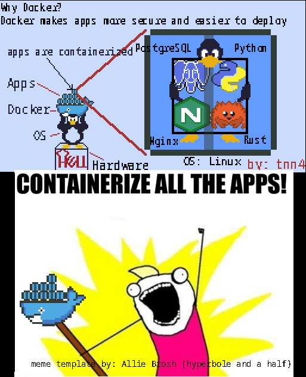
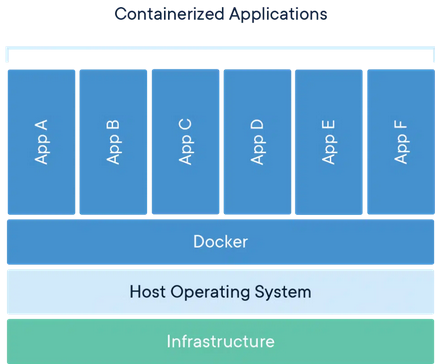
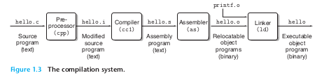
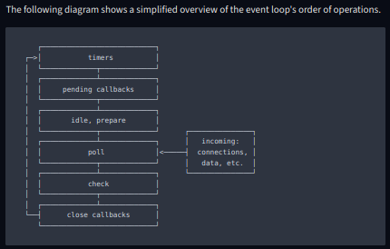
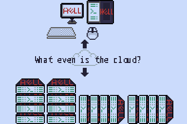

Welcome
In the beginning the Universe was created.
This has made a lot of people very angry and been widely regarded as a bad move. - Douglas Adams, The Hitchhiker's Guide to the Galaxy
Give a man a fire and he's warm for a day,
but set fire to him and he's warm for the rest of his life. Sir Terry Pratchett, Jingo
Warning
HERE BE
\____/
___ <o\ /o> ____
|| \__/ ||
/ \ / / / \\
/ \____\ \ ____/ \\
DRAGONS
This wiki is still WIP so there's going to be some messy things lurking around.
Programming Notebook
This is my notebook on tech concepts and programming.
I compile information I find useful here from any source: books, the web, blog, source code, etc.
Ansible Docker Terraform Kubernetes Git
origin the default alias on your system for a remote git repo.
git push <alias> <branchname>
git push origin branchname
https://stackoverflow.com/questions/9529497/what-is-origin-in-git
Ansible vs Terraform
Learning-Route = Terraform >> Ansible >> K8
They are complementary tools but it seems like Ansible is the more flexible and general-purpose of the two.
see:
-
https://www.ansible.com/blog/ansible-vs.-terraform-demystified
-
https://www.reddit.com/r/redhat/comments/xd7i6l/ansible_vs_terraform_demystified/
-
https://www.reddit.com/r/redhat/comments/xd7i6l/comment/io9plju/?utm_source=share&utm_medium=web2x&context=3
Without reading yet, has this ever been a mystery? Tf builds resources, does a wonderful job of it, keeps state straight, etc; ansible configures said resources, clean easy yaml, easily understood python… I’m going to read this but let’s see how close I was…
POST READ EDIT: okay yep, it’s well written and will be my go-to link if someone needs the two explained but no surprises here. Ansible can provision resources as it can run any arbitrary command and thus make an AWS api call for example to build something, but lacks the state that TF keeps so tear-down/upgrades will require manually written “guardrail” logic and that’d just be reinventing a wheel.
But still a good reference to those beginning to grasp those concepts.
Terraform takes an immutable approach to infrastructure. If you are unfamiliar with immutable infrastructure, it is defined as instances that do not change over time or are unable to be changed. To greatly simplify, an IT operator can create a declarative file (a Terraform HCL file) that represents in structured data what they want their end-state cloud footprint to look like and deploy this with Terraform. One of the advantages of this approach is that it creates a single source of truth (that HCL file) that can be deployed over and over again without having to understand how it gets to the end-state. This approach can be simple and elegant for individuals getting started quickly but depending on the size of infrastructure can become complex and hard to manage.
Ansible, by design, takes an imperative approach to automation. You simply have a task list that iterates through each resource.
- https://www.reddit.com/r/ansible/comments/pktanv/comment/hc5wy8h/?utm_source=share&utm_medium=web2x&context=3
If the infrastructure you spin up is very predictable in terms of number of nodes and types of services, terraform will buy you very little over just using ansible. Also, terraform is terrible at configuration management, which ansible excels at. However, if you're going to add and remove services regularly and spin up environments then tear them down, terraform will be more than worth the effort, since it will idempotent-ly ensure everything is as you want to in the current definition of the infrastructure, whenever you run it.
If you're infrastructure is fairly well defined but you might add or remove a few nodes only once in a while, still prefer ansible. You can use the 'count' property to do the same thing, in that case.
>> https://www.reddit.com/r/ansible/comments/pktanv/comment/hc5sfw8/?utm_source=share&utm_medium=web2x&context=3
Ansible doesn't maintain any state of the infrastructure, everything is done through the SSH connection to compute things such as facts or apply desired configuration every time. That's why you playbooks/roles must be idempotent or you will break your infrastructure because Ansible doesn't have any conscience of what run on your machines (is there a webserver, a database ?) and doesn't have something to track what has been applied at a given time (no state such as TF). From the infrastructure side of things, you only have an inventory to know what machines you have, but it's static by design, you need to manage it manually. You can of course use a dynamic inventory but you will need to build it yourself if it doesn't already exists for your infrastructure provider.
Terraform however, use a "state" (can be a simple JSON file or store in DB) to track what you applied and know if changes need to be applied if you change your .tf files. Terraform can have conscience of what machines or services on cloud you are running because of this state file (and can compare it by querying APIs such as AWS, Azure or even vSphere i.e.).
But tbh, I don't find Ansible is any good to manage infrastructure compare to TF, it is way better to manage configuration in the machine itself (manage system configuration, application deployment and so on). But you can use it in tandem with Terraform : Terraform to manage infrastructure (create your VM, manage DNS, block storage, S3... on cloud provider) and Ansible for internal provisionning such as deploying your applications (if you are not on immutable infrastructure side of things).
>> https://www.reddit.com/r/devops/comments/125ezvw/comment/je3y741/?utm_source=share&utm_medium=web2x&context=3
These two tools are typically used for different purposes. Ansible is often used to manage software installation and configuration on hosts. Terraform is typically used to manage infrastructure resources like virtual machines, queues, message brokers etc. I think learning Terraform will provide useful. Terraform and CloudFormation/CDK are probably the leaders in tooling for managing e.g. AWS resources. You could learn Ansible, or alternatively, Chef or Puppet.
sinofool · 8 mo. ago
My personal solution is docker compose managed by ansible.
Home lab and similar small scale environments change more frequently. Honestly I think it needs virtualization not orchestration.
Kubernetes is designed to run a single distributed app on 100 physical servers. Not 10 different apps on 2 servers. Every additional layer of abstraction has a cost. I just can’t afford it at small scale.
Also came here to say this.
I run two swarms in my homelab. Even if you only deploy a single docker host, you should probably deploy it as a single-node swarm. It opens up so much more in Portainer, and will give you more "training" should you ever want to switch over to k8s.
vladimich · 2 yr. ago
We've used Docker Swarm on-prem for a few years in production too, before moving to Kubernetes (EKS) and having used both systems extensively, yes, you can accomplish a lot in Swarm too but it's all hacked together and held together with duct tape.
Docker Swarm is dead
If you're forced to use Kubernetes and don't use the cloud managed (and vendor locked) variety, then consider something like K3s or even RKE with either Rancher or Portainer. You'll make your own life more tolerable. And don't get caught up in running software that's too complicated either: Caddy or even just Nginx with Certbot (or the Kubernetes variety of it) will be fully sufficient for ingress with SSL/TLS in most cases. NFS will be good enough for sharing files across multiple pods as well and so on...
https://www.reddit.com/r/docker/comments/oufvd8/comment/h72bhee/?utm_source=share&utm_medium=web2x&context=3
Spark_77 · 3 yr. ago · edited 3 yr. ago Wholesome
Ok, here's my scenario.
I start a new development project that I'm going to deploy to the cloud (in my case, Azure). In order to test fully, I need to create various resources - a database, webservice, certificate store, firewall and so on in my development environment, all of which will need to be configured.
So lets say I do all of that manually. I develop my software, deploy it, test it. Great! but now i need to release it to my production environment, I've got no choice but to manually create all the resources and configure them again.
If I write a terraform script to create and configure all of my resources I can create the production einvironment in just a few minutes by running the script. Even better, I know that everything is configured properly, because its the same as my dev/test environment.
Now imagine if I sell my software to another 100 customers - I can re-use the script over and over. If make an update to the software that needs a new resource, I add it to the script and then when I upgrade each of my 100 systems I just run the terraform script again and it'll add the resource for me, again done correctly and configured ready to go.
https://www.reddit.com/r/explainlikeimfive/comments/hfkmya/comment/fvyewbz/?utm_source=share&utm_medium=web2x&context=3
proxmox is basically debian
Rocky linux is basically a free slower updated version of RHEL
RHEL has a free developer subscription that allows up to 16 nodes
Automate install of OS from the network
Use PXE
Set up PXE server
https://linuxhint.com/pxe_boot_ubuntu_server/
- Set up DHCP server on you server, you could use your router
- or set it up on your pc, Ubuntu has dnsmasq which can act both as a DHCP server and TFTP server
- Mine AiDisk which allows you to share files in the USB disk through the internet
- Set up TFTP or a way to transfer data to the target
- Get the boot images you want to use
Set up the bare metal target
-
The target needs to to have a NIC that's compatible with PXE check with manufacture.
-
PXE is usually disabled on default because it's usually not needed and slows down boot
-
Not the casre here for us
-
On mine, an Asus, its called Advanced > Network Stack > Enable
Context: I need to set up git
i need git
I use cgit
cgit needs web server
web server is nginx
nginx needs config
config nginx with bash
Problem: bash scripts are unmaintainable
devops suggests Ansible
why is ansible? ansible makes infrastructure easier to manage (after paying to get over the learning curve)
what is ansible? software, a bunch of programs written in Python by some smart people
how does ansible work mechanically? a bunch of Python, you can write Ansible scripts that auatomate everything
how does ansible work abstractly? infrastructure as code, nodes
Problem I need to write reusable instructions for ansible
SOlution You need playbooks
ansible calls them playbooks
- ansible playbook = ansible script
- playbooks are expressed in [YAML](https://yaml.org/)
- playbooks consists of plays run in order of declaration
An assembly line is a production process that breaks the manufacture of a good into steps that are completed in a pre-defined sequence. Hey! A playbook is like an assembly line where the end product is the desired state of your computer.
playbook = [ play1, play2, ... ,playN ]
each play runs 1 or more tasks
play = [task1, task2, ..., ,taskN]
each task calls and Ansible.module
so using above logic
Playbook = [
play1 = [task1.1, task,1.2,... 1.N]
play2 = [task2.1, task,2.2,... 2.N]
...
playN = [task.M.1, task, M.2, ... taskM.N]
]
task - some_script.py
so
Playbook = [
play1 = [script1.1, script1.2,... script.N]
play2 = [script2.1, script,2.2,... script2.N]
...
playN = [script.M.1, , scriptM.2, ... scriptM.N]
]
so a playbook is a bunch of scripts called in order
This more elaborately answers the question of how Ansible works?
it's a bunch of scripts called in a well=defined order
ans since can be written in anything
Ansible can be used for anything that requires scripts to be called in order, kind of like Make
Ansible.module - (A module is a reusable, standalone script that Ansible runs on your behalf, either locally or remotely. Modules interact with your local machine, an API, or a remote system to perform specific tasks like changing a database password or spinning up a cloud instance.)
What can ansible modules be written in? ansible modules are independent scripts so they can be written in any lanaguage
Ansiblers prefer Python
Problem: my Ansible.playbook is getting too complex
You need Ansible.roles.
What is an ansible.role?
In Ansible, the role is the primary mechanism for breaking a Ansible.playbook into multiple files.
Why Ansible.role?
- The breaking of playbook allows you to logically break the playbook into reusable components.
- Ansible roles allow you to develop reusable automation components by grouping and encapsulating related
i.e. roles are modules for playbooks
Others have written roles for you. YOu can find them at Ansible-Galaxy. It's a place to host Ansible roles. Galaxy provides pre-packaged units of work known to Ansible as roles and collections.
control nodes -- controls [ssh] --> managed node
control node
-- requires UNIX-like OS
managed node
-- Python 3.5-3.11
-- SSH w/ user you can access w/ interactive POSIX shell
https://www.ansible.com/blog/ansible-vs.-terraform-demystified
- The primary difference for their community versions is that Ansible is an multi-purpose automation tool, whereas Terraform is an infrastructure as code tool.
need git
cgit
cgit needs web server
web server is nginx
nginx needs config
config nginx with bash
bash is PITA
devops suggests Ansible
what is ansible?
why ansible? ansible makes infrastructure easier to manage (after paying to get over the learning curve)
what is ansible? a bunch of programs
how does ansible work mechanically? a bunch of Python
how does ansible work abstractly? infrastructure as code, nodes
control nodes -- controls [ssh] --> managed node
control node
-- requires UNIX-like OS
managed node
-- Python 3.5-3.11
-- SSH w/ user you can access w/ interactive POSIX shell
https://www.ansible.com/blog/ansible-vs.-terraform-demystified
- The primary difference for their community versions is that Ansible is an multi-purpose automation tool, whereas Terraform is an infrastructure as code tool.
Git
Version Control System
Docker
Where is Docker?
Who is Docker?
I'll do better, why is Docker?
You see those boxes on that ship looking whale. They're called containers and they're very useful.


View doc archives
`docker pull docs/docker.github.io`
# Get the main branch
`docker pull https://github.com/docker/docs/tree/main`
`docker run -ti -p 4000:4000 docs/docker.github.io`
Access older arvhived documentation
- enter the version number and selecting it from the branch selection list of your repo
- directly accessing the Github URL for your version e.g. https://github.com/docker/docs/tree/v1.9
- run container of the specific tag for https://hub.docker.com/r/docs/docker.github.io in Docker Hub
access
v1.9docker run -it -p 4000:4000 docs/docker.github.io:v1.9`
Docker Desktop
Start on login
$ systemctl --user enable docker-desktop
Update docker desktop
# Download new version
$ sudo apt-get install ./docker-desktop-<version>-<arch>.deb
When Docker starts -> create context set context_current to context
docker_cli targets a docker_context
# Copies new files or directories from <src>
# to the filesystem of the container at path <dest>
COPY . .
Clean up old versions before hand
- uninstall old versions:
for pkg in docker.io docker-doc docker-compose podman-docker containerd runc; do sudo apt-get remove $pkg; done - uninstall docker engine:
sudo apt-get purge docker-ce docker-ce-cli containerd.io docker-buildx-plugin docker-compose-plugin docker-ce-rootless-extras - delete all images, containers and volumes:
sudo rm -rf /var/lib/docker
sudo rm -rf /var/lib/containerd
https://docs.docker.com/engine/install/
https://download.docker.com/linux/static/stable/
NOTE .tgz is short for .tar.gz
Since we're on PopOS! which is a Ubuntu derivative, I'm just going to install docker desktop for linux Docker engine comes bundled with Docker Desktop for Linux
Install docker desktop on linux
We need to have kvm support
modprobe kvm
# if you know your cpu has virtualization support and this command fails,
# it means the option is disabled in the BIOS, go check the BIOs and enable it
modprobe kvm_intel # or modprobe kvm_amd
# lsmod shows modules
# grep filters the text
lsmod | grep kvm
ls -al /dev/kvm
# Add your user to the kvm group so you can access the kvm device
# usermod - modifes systemaccounts
# -a / --append - add user to supplementary groups use only with -G
# -G / --groups - the supplementary group list
sudo usermod -aG kvm $USER
# tip to remove user, must be used with -G like -a
# don't run this, it's for FYI
sudo usermod -rG kvm $USER
# Sign out and sign back in
# Change current group id of login session
newgrp kvm
# Check which groups user is in
groups
Install Docker Desktop
# Clean prior docker desktops
sudo apt remove docker-desktop
rm -r $HOME/.docker/desktop
sudo rm /usr/local/bin/com.docker.cli
sudo apt purge docker-desktop
Get the docker desktop package for your system
sudo apt-get update
sudo apt-get install ./docker-desktop-<version>-<arch>.deb
NOTE if you have >250 employers OR revenue >=$10 million, you need to pay
NOTE do this if you don't want to use sudo or can't: https://docs.docker.com/engine/install/linux-postinstall/
the Docker daemon binds to a Unix socket that root user owns, so others can only use sudo to access
IF you don't want to use sudo, you have to make a docker group and add users to it
# check if docker group exists
cat /etc/group | grep docker
if [ $? -eq 1 ];then
echo 'ERR group not found: docker'
fi
# Create docker group
sudo groupadd docker
# Add your user to the docker group
sudo usermod -aG docker $USER
# activate the change
newgrp docker
# verify docker command works
docker run hello-world
# WARN if you used sudo beforehand before adding your user to docker group you might get an error
# to fix remove ~/.docker/ or change owernship with the following commands
sudo chown "$USER":"$USER" /home/"$USER"/.docker -R
sudo chmod g+rwx "$HOME/.docker" -R
# Configure docker to start on boot/not start on boot Optional
sudo systemctl <enable | disable > docker.service
sudo systemctl <enable | disable > containerd.service
# Configure logging
configure logging
WARN! logs might take too much disk space because log rotation is not on by default ( this is for compatibility reasons)
WHAT IS log rotation?
- In IT log rotation is an automated processes where log files are processed after they become too big or too old like deleting or compressing them usually to save disk space
To Turn on log rotation
# Go to /etc/docker/
# create the file daemon.json if it does not exist
if [ -f daemon.json ]; then
touch daemon.json
fi
Use the local log driver which uses log rotation by default
daemon.json
{
"log-driver": "local"
}
see: https://docs.docker.com/config/containers/logging/json-file/
- To enable log-rotation: Set the
max-sizeandmax-file - Restart docker after you changed
daemon.jsondaemon.json
{
"log-driver": "json-file",
"log-opts":{
"max-size": "10m",
"max-file": "3"
}
}
Docker postgres image runs on top of Debian Bullseye or Alpine Linux
This is why this works:
docker run --name some-postgres -e POSTGRES_PASSWORD=mysecretpassword -d -p 5432:5432 postgres
docker ps
CONTAINER ID IMAGE COMMAND CREATED STATUS PORTS NAMES
05b3a3471f6f postgres "/docker-entrypoint.s" 1 seconds ago Up 1 seconds 0.0.0.0:5432->5432/tcp some-postgres
docker exec -it 05b3a3471f6f bash
root@05b3a3471f6f:/# psql -U postgres
postgres-# CREATE DATABASE mytest;
postgres-# \q
psql -h public-ip-server -p 5432 -U postgres
(password mysecretpassword)
postgres=# \l
List of databases
Name | Owner | Encoding | Collate | Ctype | Access privileges
-----------+----------+----------+------------+------------+-----------------------
mytest | postgres | UTF8 | en_US.utf8 | en_US.utf8 |
postgres | postgres | UTF8 | en_US.utf8 | en_US.utf8 |
template0 | postgres | UTF8 | en_US.utf8 | en_US.utf8 | =c/postgres
Docker Basics
Why Docker? Makes your life a whole lot easier?
What is Docker? It is a technology that containerizes your applications.
WHy containerization? It makes doing hard computer stuff much easier.
What's the price? A whole lot. Jokes aside, you have to learn how Docker works and if you make mucho $$$ you have to pay the folks at Docker $$. In return, as menteioned before investing time learning it will make your life much easier down the road.
Example:
No Docker
I is web dev, I needs to:
- Set up web service
- I need web framework - Ruby on Rails
- I need database - SQL database
- I need network proxy router - Nginx
Traditional way:
- Install OS
- Set up Ruby on Rails
- Set up SQL database
- Set up Nginx
- Wire them together - takes forever, PITA
Now imagine doing that manually everytime for 100 servers with different OS and configurations. You're going to mess up. A lot.
APP = [RoR, SQL, Nginx]
OS_N = {Windows, Ubuntu, Arch, CentOS, Redhat, etc.}
APP APP APP APP --> ERR! ERR! ERR! ERR!
--- --- --- ----
OS_1 OS_2 OS_3 OS_4 <-- different OS and versions - incompatiblities galore
:(
With Docker:
Docker's job is to abstract away the OS so you can focus on the application.
Apps run in containers managed by Docker
You can write dockerfiles
With docker
Write dockerfile once
That dockerfile contains instructions to deploy the container
As long as the server can run Docker you can:
Deploy all containers to the cloud with `docker up dockerfile`
Much easier (assuming you took the time to learn docker)
Con(APP) = containerized app
DCK = Docker
Con(APP) Con(APP) Con(APP) Con(APP) --> OK OK OK OK
--- --- --- ---
DCK DCK DCK DCK <--- Abstraction Layer
--- --- --- ---
OS_1 OS_2 OS_3 OS_4 <-- OS: NO Problems
:)
WARNING! Technical Stuff below:
Install docker
Ubuntu
Clean up old versions
sudo apt remove docker docker-engine docker.io containerd runc
Get rid of images,containers, volumes, custom configs
They aren't automatically removed
sudo rm -rf /var/lib/docker
sudo rm -rf /var/lib/containerd
sudo apt update
sudo apt install \
ca-certificates \
curl \
gnupg
sudo mkdir -m 0755 -p /etc/apt/keyrings
curl -fsSL https://download.docker.com/linux/ubuntu/gpg | sudo gpg --dearmor -o /etc/apt/keyrings/docker.gpg
Set up repo
echo \
"deb [arch="$(dpkg --print-architecture)" signed-by=/etc/apt/keyrings/docker.gpg] https://download.docker.com/linux/ubuntu \
"$(. /etc/os-release && echo "$VERSION_CODENAME")" stable" | \
sudo apt update
sudo apt install \
docker-ce \
docker-ce-cli \
containerd.io \
docker-buildx-plugin \
docker-compose-plugin
Test docker installation
sudo docker run hello-world
Install Docker desktop for Ubuntu
If you have non-Gnome Desktop environment
sudo apt install gnome-terminal
Clean up old docker desktop if any
sudo apt remove docker-desktop
rm -r $HOME/.docker/desktop
sudo rm /usr/local/bin/com.docker.cli
sudo apt purge docker-desktop
Set up Docker's package repository (you should have already done this)
Download: https://desktop.docker.com/linux/main/amd64/docker-desktop-4.17.0-amd64.deb?utm_source=docker&utm_medium=webreferral&utm_campaign=docs-driven-download-linux-amd64
install the package with apt
sudo apt-get update
sudo apt-get install ./docker-desktop-<version>-<arch>.deb
Launch Docker Desktop
systemctl --user start docker-desktop
Enable Docker Desktop at login
systemctl --user enable docker-desktop
Stop Docker desktop
systemctl --user stop docker-desktop
Docker Usage
Running image == container
You will need a docker image. Docker images are the code and data for containers.
A container is the running image.
OS Analogy
- Image ~ Program/Code/Data
- Container ~ Process
Get a docker image
The following will download IMAGE from Docker Hub Registry. The Registry is where Docker Images are stored and distributed. You can set up your own local Registry if needed.
docker pull image IMAGE
Run the image:
docker run [OPTIONS] IMAGE [ARGS...]
A docker container will need to
- talk, communicate, transfer with other containers and services remotely
- read/write and persist data to memory
Networking
Our containers need to talk to other containers and services on the internet and our loca networks.
A container will bind to a single network when it starts up. Add more network conncections with:
docker network connect [OPTION] NETWORK CONTAINER
Storing data
We need our containers to manipulate and store data right?
We mount volumes on containers.
You can use volumes -
- preferred mechanism for persisting data generated and used by Docker containers
- docker managed so is portable
- types:
- named -
- anonymous - given a unique random name
- usage:
docker volume create VOLUME - TIP If you start a container with a volume that does not exist, it will be made for you
bind_mounts
- a file or directory on the host machine,
- is not Docker managed so is more performant, but is not portable because it relies on the specific host OS
https://superuser.com/questions/1559357/what-does-xdg-stand-for
using docker client rootless requires setting the socket path using $DOCKER_HOST explicitly
echo $XDG_RUNTIME_DIR >> /run/user/1000
export DOCKER_HOST=unix//$XDG_RUNTIME_DIR/docker.sock
docker context ls
docker contest use rootless
# Current context is now rootless
docker run -d -p 8080:80 nginx
Aborting because rootful Docker (/var/run/docker.sock) is running
see: https://stackoverflow.com/questions/71949426/error-aborting-because-rootful-docker-var-run-docker-sock-is-running
sudo systemctl disable --now docker.service docker.socket
https://registry.terraform.io/providers/kreuzwerker/docker/latest/docs
example usage
terraform {
required_providers {
docker = {
source = "kreuzwerker/docker"
version = "3.0.2"
}
}
}
provider "docker" {
host = "unix:///var/run/docker.sock"
}
# Pulls the image
resource "docker_image" "ubuntu" {
name = "ubuntu:latest"
}
# Create a container
resource "docker_container" "foo" {
image = docker_image.ubuntu.image_id
name = "foo"
}
Docker Networking
see: https://docs.docker.com/network/
Containers do not now the network context. Containers only see the network interface(ip_address, gateway, routing_tables, etc).
docker run -p [HOST_IP]:[CONTAINER_IP]
docker run \
-p 8080:80 # Map host_tcp_port=8080 to container_port=80
-p 8080:80/udp # Map host=8080 -> container_udp_port=80
-p 8080:80/tcp -p 8080:80/udp # host_tcp_port=8080-> container_tcp_port=80
# host_udp_port=8080-> container_udp_port=80
Docker Backup and LOad image
https://docs.docker.com/engine/reference/commandline/save/#create-a-backup-that-can-then-be-used-with-docker-load https://docs.docker.com/engine/reference/commandline/load/
save image
$ docker save busybox > busybox.tar
$ ls -sh busybox.tar
$ docker save --output busybox.tar busybox
$ ls -sh busybox.tar
$ docker save -o fedora-all.tar fedora
$ docker save -o fedora-latest.tar fedora:latest
# compress gzip
$ docker save myimage:latest | gzip > myimage_latest.tar.gz
# cherry pick tags
$ docker save -o ubuntu.tar ubuntu:lucid ubuntu:saucy
load image
docker load < image
docker load --input myimage:latest.tar.gz
Docker Context
define context: the circumstances that form the setting for an event, statement, or idea, and in terms of which it can be fully understood and assessed.
docker contextx make it easy for a single docker_cli to manage multiple docker nodes
each context contains
- info to endpoints
- security info
to manage different clusters of odes
usage:
docker contextdocker context use <context-name>docerk context create <context-name>
Where to find context files?
~/.docker/contexts/
- each context gets it own
meta.jsonin a dedicated sub-directory - NOTE! The default context does not have a
meta.jsonso it cannot be configured manually
Docker is a container runtime that uses containerd as an internal runtime
dockerd is the persistent process that manages containers
containerd is a Docker-developed container runtime that manages the lifecycle of a container
by default, dockerd starts containerd automatically
Kubernetes vs Docker
Docker is a container runtime
Kubernetes (k8s) is a platform for running and managing containers from many container runtimes
- including Docker, containerd, CRI-O, K8s CRI(Container Runtime Interface)
Docker pull Rust
Postgres on Docker
https://hub.docker.com/_/postgres
docker run [OPTIONS] IMAGE [ARG...]
start postgres instance
# OPTIONS
# -e --env -> Set environment variables
# -d --detach -> Run container in background and print container ID
docker run \
--name some-postgres \
-e POSTGRES_PASSWORD=pwd
-d postgres
[OPTIONS] IMAGE [ARG...]
$ docker run -it --rm --network some-network postgres psql -h some-postgres -U postgres
# docker run
# see: https://docs.docker.com/engine/reference/commandline/run/
# [OPTIONS]
# -it -> --interactive --tty
# -i -> --interactive -> keep STDIN open even if not attached
# -t -> --tty -> allocate a pseudo TTY
# --rm -> automatically remove the container when it exits
# --network -> Connect the container to a network
# IMAGE
# postgres
# [ARG...]
# psql
# see: https://www.postgresql.org/docs/current/app-psql.html
# -h/--host hostname / --host=hostname -> specifies the host name of the machine on which the server is running. If values begins with slash, is is used as the directory for the Unix socket
# -U/--username username -> connect the databases as the `username` instead of default
docker run \
#[OPTION]
-it \
--rm \
--network \
# IMAGE
postgres \
# [ARG...]
psql -h some-postgres -U postgres
Run scripts automatically at set times, also known as task scheduling
Linux: cron tabs Windows: task-scheduler
https://crontab.guru/ https://www.hostinger.com/tutorials/cron-job
# list scheduled tasks
crontab -l
# opens cron table
crontab -e
# if system has multiple users
sudo crontab -u username -l
# deletes all scheduled tasks
crontab -r
# crontab -r but asks for permission
crontab -i
Separator (/). Use this operator to divide a value. For example, if you want to make a script run every twelve hours, write */12 in the Hour field.
---- minute (0-59)
| ---- hour (0-23)
| | ---- day_of_month (1-31)
| | | ---- Month (1-12)
| | | | ---- day_of_week (0-6) Sunday to Saturday
| | | | |
m h D M d
* * * * * command to execute
*/10 * * * * cmd # run every 10 minutes
*/10 4 * * * At every 10th minute past 4
fixture (testing)
What is a test fixture?
A test fixture is a valid default state for running tests.
A test fixture is a fixed state of a set of object used as a baseline foor running tests.
A software test fixture sets up the system for testing process by providing initialization code.
https://code-craftsmanship-saturdays.gitbook.io/software-testing-fundamentals/test-fixtures
Measuring a language by its popularity, in this case star count, stargazers on Github is a good proxy measure for what language you should learn
Lang
- Rust 85.9k
- Zig 26.2k
- Nim 15.6k
- Odin 4.6k
C#
Microsoft's Object-Oriented programming language.
class Program {
static void Main() {
#if DEBUG
Console.WriteLine("You are in debug");
#endif
Console.ReadKey();
}
}
https://learn.microsoft.com/en-us/dotnet/csharp/language-reference/tokens/interpolated
var name = "Mark";
var date = DateTime.Now;
// Composite formatting:
Console.WriteLine("Hello, {0}! Today is {1}, it's {2:HH:mm} now.", name, date.DayOfWeek, date);
// String interpolation:
Console.WriteLine($"Hello, {name}! Today is {date.DayOfWeek}, it's {date:HH:mm} now.");
// Both calls produce the same output that is similar to:
// Hello, Mark! Today is Wednesday, it's 19:40 now.
https://stackoverflow.com/questions/64785166/avoid-repeat-type-name-class-in-constructor
Unfortunately no.
https://www.reddit.com/r/csharp/comments/15cx15v/whats_up_with_the_simplified_using_statement/
It's pretty common to want to create something disposable at the start of a method, then dispose of it at the end. This is a shortcut for that.
// The out keyword causes arguments to be pased by reference
// i.e. any operation on the parameter is made on the argument
// it is like `ref` except `ref` requires the variable be initialized before passing
// it is like `in` except `in` does not allow modification
// declared
int value;
// initialized
// init a variable with a value
int val_2 = 1;
out_arg_example(value); // value is now 44
Console.WritLine(initialize_in_method)// $ 44
out_arg_example(out int number)
{
number = 44;
}
C# Coding Conventions
camelCase, PascalCase, kebab-case, snake_case
PascalCase for public
PascalCase for class records or structs
AClass, ARecord, AStruct
IInterface
prefix I to interfaces
IAnInterface
PascalCase for public members of types, fields, events, methods, local functions
camelCase for method parameter
void someMethod (int someParam1 , int someParam2){}
_camelCase for private
static field s_iAmStatic
thread static t_iAmThreadStatic
string performance
string interpolation for short strings
string displayName = $"{nameList[n].LastName, {nameLs[n].FirstName}";
use StringBuilder when working with a lot of strings
phrase = "aaaaa"
StringBuilder sb = new();
for (var i=0; i<10000; i++)
sb.Append(phrase);
Implicit typing / var
- use
varwhen the type is clear
Int > UInt
prefer Int for max compatibility
Arrays[]
string[] vowels = {"a","e","i","o","u"};
var vowels2 = new string[] { "a", "e", "i", "o", "u" };
use implicit typing in for loops
for(var i=0; i < 100; i++) {}
use explicit typing in foreach loops
foreach (char ch in chs){ }
Write using to shorten try-finally
if try-finally statement only calls Dispose in finally block, shorten it with using
object o = new Object();
try{
} finally {
if (o != null){
((IDisposable)o).Dispose();
}
}
using (object o = new Object(){
//do something
}
&& and ||
Use && and || to short-circuit and increase performance by skipping needless comparisons
new
these are legal
var instance1 = new AClass();
AClass instance1 = new();
// both above are equivalent to
AClass ac = new AClass();
// use object initializer to simplify object creation
var ac = new AClass { f1 = "field1", f2="field2"
f3="field3" };
Call static members by explicitly calling the class name: ClassName.StaticMember
Closures / Delegate
| term | def |
|---|---|
closure | - concept |
delegate | - C#'s implementation of closures |
Use Func<> and Action<> innstead of defining delegate types. In a class, define the delegate method.
func vs action: The difference between Func and Action is simply whether you want the delegate to return a value (use Func ) or not (use Action ). see
Action<string> ActionExample1 = (x) => { };
ActionExample1();
Action<string, string> ActionExample2 = (x, y) =>
Console.WriteLine($"x is: {x}, y is {y}");
ActionExample2();
Func<string, int> FuncExample1 = x => Convert.ToInt32(x);
Console.WriteLine($"The value is {FuncExample1("1")}");
Func<int, int, int> FuncExample2 = (x, y) => x + y;
Console.WriteLine($"The sum is {FuncExample2(1, 2)}");
Here's what you need to know about using const, static, and readonly:
If you know the value will never, ever, ever change for any reason, use const.
If you're unsure of whether or not the value will change, but you don't want other classes or code to be able to change it, use readonly.
If you need a field to be a property of a type, and not a property of an instance of that type, use static.
A const value is also implicitly static.
https://exceptionnotfound.net/const-vs-static-vs-readonly-in-c-sharp-applications/
xmlns = xml namespace
C
C is for classic. Back to the basics
Collection of C notes and example source code.
Requirements:
- C compiler
Code has been tested on Linux, specifically PopOS 22.04 with gcc version: gcc (Ubuntu 11.3.0-1ubuntu1~22.04.1) 11.3.0
Table of Contents
Example source files located in src.
Compile
On linux you can use GCC:
gcc -o <target file> <input.c>
You can also use zig as a drop-in C/C++ compiler
zig cc -o <target file> <input.c>s
C Basics
Header Files
Why does c need header files(.h)?
Header files makes your life easier.
https://gcc.gnu.org/onlinedocs/cpp/Header-Files.html
Header files eliminate code redundancy (DRY). With a header file, the related declarations appear in only one place.
'Including a header file produces the same results as copying the header file into each source file that needs it.'
Compile
C programs need to be built/compiled before they are used like you need to build a house before you can live in it, or build a car before you can drive it. Fortunately, building a computer program, in C at least, takes from seconds-minutes(for small projects e.g. your barebones http server or console app) to hours (for large projects e.g. building the Linux Kernel).

Preprocessing
// Preprocess
// directives (#<directive>) are commands for the preprocessor
// NOTE: there are no semicolons after a directive
include header
// The #include directive tells the preprocessor to open a specified file and
// copy the header file into each source file that needs it
// The include directive has two forms:
#include <filename> // for C's own std library
// For example, the compiler will look inside `usr/include`
#include "path/to/filename" // for our own headers
// The compiler looks in the current directory
// Then the default system header locations
The places that will be searched for can be altered with `-I path`.
It is best not to put absolute paths in the #include directives
For max portability use relative paths
// stdio.h is a header file
// it defines variable types, macros, and functions for input/output
#include <stdio.h>
Compile: This program will become machine instructions (object code) Object files have .o extension in UNIX in .obj in Windows
Link: The object code will be linked together into a executable
gcc is one of the most popular C compilers and is supplied with Linux
Fun fact: For a cross-platform solution, you can use the Zig compiler as a drop in replacement:
zig cc -o my_code my_code.c
https://stackoverflow.com/questions/3375697/what-are-the-useful-gcc-flags-for-c
naming conventions
- see: https://stackoverflow.com/questions/1722112/what-are-the-most-common-naming-conventions-in-c
Language Features
Comments
Use them
// This is a single line comment
/*
This is a multi-line comment
*/
Structs vs Typedef
Structs When we need to store a collection of data items: use structs
struct variables
struct {
int id;
char *name;
} struct_var1, struct_var2;
struct tags
struct struct_1 {
int id;
char *name;
}; // <-- note the semicolon
// initialization
struct struct_1 s1 = { 1, "struct with tag" };
typedef
- Note: use
struct tagsfor linked lists, not typedef
typedef struct {
int id;
char *name;
} struct_t;
struct_t s_t1 = {1, "struct as type" };
Array of Structures
struct dialing_code {
char *country;
int code;
};
const struct dialing_code country_codes[] =
{
{"Argentina", 54}, {"Bangladesh", 880},
{"Brazil", 55}, {"Myanmar", 95},
...
{"US", 1}, {"Vietnam", 84}
};
Unions
unions consist of a group of members
the compile only allocates the enough space for the largest member in that group, because only one type of that set can be used
union {
int i;
double d;
} u;
struct {
int i;
double d;
} s;
Memory difference
* members of s are stored at different addresses
* members of u are stored at the same addresses
* this means that unions take up less memory BUT they can only store one of the members at a time
Assume that:
- int takes 2 bytes
- double takes 4 bytes
Structure Union
i [] i[]d
i [] i[]d
d [] []d
d [] []d
d []
d []
Enums
enums are enumerations which means countable
in the context of programming enumerated means: a discret set of meaningful values
E.g.
- Boolean = {T, F}
- Color = {r,g,b}
- Representing the suits of a card = {Hearts, Spade, Club, Diamon}
- States of a Finite State Machine = {Go, Slow, Stop}
Implementation in C:
You can use macros (not recommended b/c verbosity, but possible)
#define SUIT int
#define CLUBS 0
#define DIAMONDS 1
#define HEARTS 2
#define SPADES 3
SUIT s;
s = HEARTS
Or you can use enumerated type:
// enum variable
enum {CLUBS, DIAMONDS, HEARTS, SPADES} s1,s2;
// enum type
enum suit {CLUBS, DIAMONDS, HEARTS, SPADES};
suit s1,s2;
Bool is just an enum with two values
typedef enum {TRUE, FALSE} Bool;
You can assign your own constants
By default the compiler assigns the first enum as 0 then counts upward, i.e. {0,1,2,...} so:
===
enum suit {CLUBS, DIAMONDS, HEARTS, SPADES};
suit s1,s2;
===
is the same as
===
enum suit {CLUBS=0, DIAMONDS=1, HEARTS=2, SPADES=3};
suit s1,s2;
===
but this is legal too
===
enum suit {CLUBS=1000, DIAMONDS=99, HEARTS=23, SPADES=321};
suit s1,s2;
===
you can assign your enum any constant you wish
WARNING: Although in C, enums are just thinly disguised integers, treating them as just integers defeats their purpose. Treat enum members as a discrete type.
E.g.
Using enums for error codes
=== NO ENUMS
fn do_something(){
printf("I did something");
return 0;
}
fn got_error() {
printf"I erred");
return 1;
}
=== YES ENUMS
enum err {NO_ERROR=0, AN_ERROR=1};
fn do_something_e() {
printf("I did something");
return NO_ERROR;
}
fn got_error_e() {
printf"I erred");
return AN_ERROR;
}
See how these functions are mechanically the same, but to the programmer one set is more descriptive.
Functions
Unlike languages like Javascript, Java, C#, where functions can be declared anywhere in the source (JS has hoisting and Java, C# don't require header files) function order does matter in C. C needs to functions to be declared at the top or in header files (.h) before they can be used.
// # Function Prototypes
// This is a prototype
// You need to declare a function prototype in the header
void read_an_int();
void initialization_example() {
// We can give a variable an intial value when it is declared
// The value 8 is said to be an initializer
int init1=8;
}
// Run: gcc a.c -o a
// Run: ./a
int main(void) {
printf("Hello world! I C you.\n");
read_an_int();
return 0;
}
// WARN: If the function prototype was not declared on top, this function will cause an implicit declaration error
void read_an_int() {
// declare i
int i;
// the d is called a format specifier
// C: https://en.wikipedia.org/wiki/C_data_types
scanf("%d", &i); // read an integer store into i
printf("You entered: %d\n", i);
}
type aliasing
- redefine name of already existing data type
- i.e. type alias
typdef unsigned char byte_t
arrow operator
foo->bar is equivalent to (*foo).bar, i.e. it gets the member called bar from the struct that foo points to.
see: https://stackoverflow.com/questions/2575048/arrow-operator-usage-in-c
indirection with pointers example
#include <stdio.h>
int main() {
// Create an int binding/container and attach/store it with value 1
int x=1;
// Create ptr to int, pointers have types too
int *ptr;
// Store the address of x into ptr, NOTE: we're storing the address which is distinct from the value
// think of this as creating a link to endpoint x with the entry `ptr`
ptr=&x;
// Dereference the address to get to the value value, i.e *(address) -> value
*ptr=8;
printf("value of x is : %d", x);
return 0;
}
C Memory Management
Higher level languages like Python, Java, C#, Javascript hide memory management from us. It makes our programming lives easier, but it comes with a steep price. That price is primarily of performance and binary sizes.
Compiled languages that don't use garbage collectors are usually faster because they run less code, and because they use less memory.
Most of the time, languages like Python and Java are fast enough for most applications.
When you have to write instructions for Operating Systems which require explicit memory management or embedded systems which are computationally and memory constrained you'll have to bust out the more performant system languages: C, C++ , Rust, Assembly (not actually a language). These take more effort to design and write.
Why is C/C++ code considered unsafe?
- C is “unsafe” in the sense that it allows you to do things that make your program crash and won't do any implicit sanity or consistency checks.
- In C, neither compile-time nor run-time checks prevent a variable of one type being changed to, or interpreted as, another type; thus, there are no guarantees on the kinds of data that a given variable might hold, the allowed set of values, their representation, or the operations that may be carried out on the data.
see:
- https://www.reddit.com/r/cpp/comments/jzo1yz/c_is_unsafe/
- https://www.reddit.com/r/cpp_questions/comments/dph2py/does_cs_potential_for_unsafe_code_make_life_more/
C Miscellania
Put uncategorized info here. Sort them when you can.
top
Table of Contents
global variables in resource constrained environments
Global variables: just don't use global variables. They are evil. - unless you are working on embedded project and you have 1024 bytes of RAM and 8MHz CPU.
Yes @Kamil, that can be painful. But even in that case, it is a good practice to create a static global struct variable with all the global context, create a pointer as local variable in the main function and pass that pointer only to the functions that need to access the global data.
see: https://stackoverflow.com/questions/1722112/what-are-the-most-common-naming-conventions-in-c
Linked Lists
First see: dynamic allocation
Dynamic storage allocation is useful for building lists, trees, graphs and other linked data structures.
The most basic linked data structure: a linked list.
Fun fact: Although C programmers love linked lists, Rust programmers are not so enthusiastic (follow the link to learn even more about linked lists and Rust): Learning Rust With Entirely Too Many Linked Lists
[ ][*]-->[ ][*]-->[ ][/]
The last node in the list has a null pointer
Linked lists are more flexible than arrays:
- can more easily insert, delete nodes in a linked list, allowing it to grow or shrink
- BUT: you lose random access, you must traverse the list to see it all, analogy
- any element in an array can be accessed in the same amount of time, so O(1) by moving the pointer
- moving a pointer = changing pointer value in memory (CPU register)
- accessing a node is fast if node is close to beginning, BUT: slow if node is close to n, average search time = O(n/2)
Declare (simple) Node type
struct node {
int value;
struct node *next;
};
Now we need a way to keep track of where the list begins:
struct node *first = NULL;
How to create a node:
- Allocate memory for the node
- Store data in the node
- Insert node into the list
code:
struct node *new_node;
new_node = malloc(sizeof(struct node));
memory:
new_node [*] --> [ ][ ]
value next
code:
(*new_node).value = 10; // notice that we applied indirection operator(*) to new_node
// the parentheses around around *new_node are mandatory because the
// . operator would otherwise take precedence
memory:
new_node [*] --> [ 10 ][ ]
value next
Shorcut:
Use -> (right arrow selection) operator if you don't want deref(*) and dot(.)
| traditional | -> |
|---|---|
(*new_node).value = 10 | new_node->value = 10; |
Read into your linked list :
scanf("%d", &new_node->value);
Notice that &new_node-> value === &(*new_node).value. We do this because we're trying to pass the pointer to value not value itself.
Let's use linked lists to ability to insert anywhere to our advantage which is something arrays can't do.
new_node->next = first;
first = new_node;
Let's trace the process of inserting two nodes into an empty list. Null pointers are represented as diagonal lines (/)
struct node {
int value;
struct node *next;
};
[/] null pointer
[*] ---> pointer
first = NULL; first [/] <-- null pointer
new_node [ ]
new_node = malloc(sizeof(struct node)); first [/]
new_node [*] --> [ ][ ]
new_node->value = 10 first [/]
new_node [*] --> [10][ ]
new_node->next = first; first [/]
new_node [*] --> [10][/]
first = new_node;
first[*]
\
v
[10][*]
^
/
new_node
new_node = malloc(sizeof(struct node)); first[*] ---> [10][/]
new_node[*] ---> [ ][ ]
new_node->value = 20; first[*] ---> [10][/]
new_node[*] ---> [20][/]
new_node->next = first; first[*] --------------
\
[10][/]
/
new_node[*]-->[20][*]--
first = new_node; first[*]
\
v
[20][*]--->[10][*]
^
/
new_node
Inserting a node is such a common operation we should turn it into a function:
struct node* add_to_list(struct node *list, int n) {
struct node *new_node;
new_node = malloc(sizeof(struct node));
if (new_node == NULL) {
printf("[Error]: malloc failed in add_to_list\n");
exit(EXIT_FAILURE);
}
new_node->value = n;
new_node->next = list;
return new_node;
}
struct node* read_numbers(void){
struct node *first = NULL:
int n;
printf("Enter a series of integers ( 0 to terminate ): *);
for (;;) {
scanf("%d", &n);
if (n==0) {
return first;
}
first = add_to_list(first,n);
}
}
Searching a Linked List
idiom for (p=first; p != null; p = p->next)
The assignment p = p->next advances the p pointer from one node to the next.
Deleting a Node from a Linked List
- Search for the node to be deleted
- Alter the previous node so it "bypasses" the deleted node
- Call
freeto reclaim space occupied by the deleted node
Step 1 is harder than it looks bc if we search the list in obvious way we end up with pointer to node to be deleted. We won't have data to change the previous node.
There are various solution. One we can used is the "trailing pointer".
- Keep a pointer to previous node (prev)
- Keep a pointer to current node (cur)
If list points to the list to be searched, and n is the integer to be deleted. The following loop implements step 1
for (cur = list; prev=NULL; cur != NULL && cur->value != n; prev=cur, cur=cur->next)
Let's break it down:
cur != NULL && cur->value != n; prev=cur,cur=cur->next
NOTICE: cur-> value, points to a value
cur-> next, points to a pointer
idiom: -> to a value gets us that value
-> to a pointer gets us to another location in memory
if there is a value at `cur` and its not n, move to the next node (set previous to current then push current to next)
prev, cur, next
^ ^ ^
prev cur | 1
prev cur 2
This is how to perform the bypass.
code:
prev->next = cur->next, this makes the pointer in the previous node point to the node after the current node
prev cur
[*] [*]
| |
v v
list [*]-->[30][*]-->[40][*] [20][*]--> ([10][/])
\ ^
\______________/
Now we can release memory occupied by the current node:
free(cur)
Let's put it all together in delete_from_list:
struct node* delete_from_list(struct node *list, int n){
struct node *cur, *prev;
for (cur = list, prev = NULL;
cur != NULL && cur->value != n;
prev = cur, cur = cur->next)
;
if (cur == NULL)
return list; // n not found
if (prev == NULL)
list = list->next;
else
prev->next = cur-> next; // do bypass
free(cur)
return list;
}
Appendix:
miegakure
Okay, time for our vacation to Japan. First stop is a Japanese garden. See it in your head.
The green bushes, the babbling brook, the little bridge ahead of you. Can you see all of it?
No, you can’t.
That’s not a fault of your imagination, that’s by design.
Japanese gardens are fashioned using a principle called miegakure. That translates as “hide and reveal.” The path is structured so there’s no single point from which you can see the entire garden.
You have to keep walking to reveal new stuff.
You can hear the water running but you can’t see it until you turn the corner. You smell the flowers but they’re not visible until you get past the trees.
https://www.cs.yale.edu/homes/aspnes/pinewiki/C(2f)Debugging.html
install gfb on debian: sudo apt install gdb
gdb commands
help
Get a description of gdb's commands.
run
Runs your program. You can give it arguments that get passed in to your program just as if you had typed them to the shell. Also used to restart your program from the beginning if it is already running.
quit
Leave gdb, killing your program if necessary.
break
Set a breakpoint, which is a place where gdb will automatically stop your program. Some examples:
break somefunction stops before executing the first line somefunction.
break 117 stops before executing line number 117.
list
Show part of your source file with line numbers (handy for figuring out where to put breakpoints). Examples:
list somefunc lists all lines of somefunc.
list 117-123 lists lines 117 through 123.
next
Execute the next line of the program, including completing any procedure calls in that line.
step
Execute the next step of the program, which is either the next line if it contains no procedure calls, or the entry into the called procedure.
finish
Continue until you get out of the current procedure (or hit a breakpoint). Useful for getting out of something you stepped into that you didn't want to step into.
cont
(Or continue). Continue until (a) the end of the program, (b) a fatal error like a Segmentation Fault or Bus Error, or (c) a breakpoint. If you give it a numeric argument (e.g., cont 1000) it will skip over that many breakpoints before stopping.
print
Print the value of some expression, e.g. print i.
display
Like print, but runs automatically every time the program stops. Useful for watching values that change often.
C Compilation
Compilation Steps
Compiling a C program comes in multiple steps.
Preprocess
- the program is given to the preprocessors which obey commands that begin with
#calleddirectives - a preprocessor acts like an editor, it can modify the program before going to the next step
main.c
#include <stdio.h> // <-- These are the directives
void main(){
}
Compile
- the modified program is given to the
compilerwhich translate it into machine instructions(object code) - object code files end with
.oon Linux and.objon Windows
program.c program2.c --> [compiler] --> program.o program2.
[c,c,c,c,c]
|
V
[Compiler]
|
V
[o,o,o,o,o]
Link
- In the final step, the
linkercombines the compiler'sobject codeand additional code needed to make a complete executable program. - This additional code can include library functions like
printf
Link object files visual
o = object(.o) files
exe = executable file
[o,o,o,o,o,o,o,o,o] <-- list of object files
|
v
[Linker]
|
v
o--o--o
| | |
o--o--o
| | |
o--o--o
|
V
[exe] <-- this is the binary/ machine code that the CPU '(exe)cutes'
Big picture
C Compilation
[c,c,c,c,c] <-- c files you wrote, and libraries you #included
|
V
[Compiler]
|
V
[o,o,o,o,o,o] <-- list of object files
|
v
[Linker]
|
v
o--o--o
| | |
o--o--o
|
V
[exe] <-- this is the binary/ machine code that the CPU '(exe)cutes'
What are .o, .a, .so files.
- https://stackoverflow.com/questions/7718299/whats-an-object-file-in-c
- https://stackoverflow.com/questions/9809213/what-are-a-and-so-files
.o, object file = result of the compilation step
.a, archive file = statically linked libraries
.so, shared object file = dynamically linked libraries, they are linked during runtime, after the creation of .o files, so if there are any changes in .so no recompile is needed.
C Dynamic Memory Allocation
Dynamically allocate strings
It is sometimes impossible to to anticipate how long an array of chars(strings) can be. We can allocate strings dynamically and determine how long a string needs to be at runtime.
Using malloc to allocate memory for string
malloc prototype:
void* malloc(size_t size);
malloc allocates block of size bytes and returns a generic pointer(void *) to it.
Remember to account for the null char
p = malloc(n+1); // this can be used without casting
p = (char *) malloc(n+1); // but explicit casting to char* could make your code easier to maintain
Warning: Memory allocated using malloc isn't cleared or initialized, so p will point to an uninitialized array of n+1 characters
p[*]
|
v
[ ][ ][ ][ ][...][ ]
0 1 2 3 4 n
Calling strcpy is one way to init an array:
strcpy(p, "abc")
p[*]
|
v
[a][b][c][\0][...][ ]
0 1 2 3 4 n
Dynamically allocate arrays
int *a;
a = malloc(n * sizeof(int));
// Now you can treat `a` as an array name even though it technically is a pointer
// Initialize the `a` "array" with initial value 0 (since its an int array)
for (i=0; i<n; i++){
a[i] = 0;
}
WARN: Always use sizeof when calculating how much space is needed for an array.
Deallocating Storage (to avoid memory leaks)
p = malloc(...);
q = malloc(...);
This is what the memory looks like
p[*] --> [ ]
q[*] --> [ ]
p = q;
p[*] [ ]<-- this block of memory is now garbage
\______
|
v
p[*] --> [ ]
A block of memory that is no longer accessible is garbage.
Unlike Java or C# programs which have automatic garbage collection. C programs, do not automatically clean garbage for you. That is the programmer's job. This adds maintainence difficulty in return for performance gains.
You have to call the free function to release memory.
free
void free(void *ptr)
p = malloc(...);
q = malloc(...);
free(p);
p = q;
Dangerous "Dangling Pointers"
Reusing a piece of memory that previously freed is an error.
// Bad code
char *p = malloc(4); // allocate memory for a string of len 3
...
free(p); // p's memory has been released into the , p is now a dangling pointer
...
strcpy(p, "abc"); // ** WRONG ** , try to use dangling pointer p, you're trying to use memory that's no longer yours, this is a programming crime so the OS will crash and yell at you
Linked Lists
For example of how dynamic memory allocation is used for data structures
see: Linked Lists
C OOP
Notes on implementing OOP from scratch in C as an education exercise.
Prereqs:
- understand pointers: here
OOP is taught exceptionally poorly because it glosses over the fact that all its concepts can be implemented from a procedural language like C.
read http://staff.washington.edu/gmobus/Academics/TCES202/Moodle/OO-ProgrammingInC.html
Before you can grasp OOP, you need to know the basics of data structures and (late binding)/(higher order functions).
higher order functions take functions as arguments and return functions.
fn_1(fn_2,...,fn_n) -> fn_result
For example it's hard to grok polymorphism which is basically passing around a pointer to data and a bunch of functions that operate on the data. Or understanding the concept of structuring data instead of just using primitives to and passing around (higher order functions)/(pointers to functions).
higher order function == pointer to functions
Stack Overflow example:
Here's a way to do OOP in C if you want to avoid C++:
I would amend S. Lott's answer to use an opaque pointer(wikipedia), to perform data hiding of the members of the struct:
- Define your class however you want using normal OO design.
- Member variables of your class go into a C language struct.
- you do not want to expose the member variables of your object (since these would be "private" in an OO language)
- In the header file, declare an opaque pointer, i.e.
typedef struct mystruct_s *mystruct_t; // first argument to all your methods - the type
mystruct_twhich is a pointer to the opaque structuremystruct_s, anything you declare asmystruct_twill be an opaque pointer - example definition of
mystruct_s:
- In the header file, declare an opaque pointer, i.e.
struct mystruct_s {
uint16_t *data; // a pointer to the actual data array of uint16_t.
size_t sz; // the allocated size of data.
size_t used; // number of segments of data in use.
int sign; // the sign of the number (-1, 0, 1).
};
// users of the header file canno see this
- For all the methods you want to be "public", put their signatures in your .h file. Method bodies should go into the .c file, and "private" methods should be only defined in the .c file and also declared static so their symbols do not collide with symbols defined in other files.
Clever naming conventions like underscores are unnecessary using this method, but it means that all your member variables will be private. Functions can be public or private, although public functions they are part of a global namespace so you might want to qualify their names with a "package" name like mystruct_push(), mystruct_pop(), etc.
You also need to make it clear if the caller or the library is responsible for calling malloc() and free(). Most likely you will have mystruct_t *create() and void destroy(mystruct_t *target) methods.
Notes:
https://www.reddit.com/r/C_Programming/comments/m0ui5i/why_use_c_instead_of_c/
Learn to add function pointer members to structs.
Another similar approach is for an object to have a single pointer to a separate (often constant and statically-allocated) structure of function pointers. That way multiple objects with a common set of methods can share the same set of function pointers.
This mirrors C++'s per-object vtable pointer used for virtual function dispatch.
I once had a professor describe the development of C++ as "trying to make an octopus by stapling more legs to a dog"
https://stackoverflow.com/questions/897366/how-do-pointer-to-pointers-work-in-c-and-when-might-you-use-them/897414#897414
function factories are examples of higher order functions
// this is a function called functionFactory which receives parameter n
// and returns a pointer to another function which receives two ints
// and it returns another int
int (*functionFactory(int n))(int, int) {
printf("Got parameter %d", n);
int (*functionPtr)(int,int) = &addInt;
return functionPtr;
}```
see:
- http://staff.washington.edu/gmobus/Academics/TCES202/Moodle/OO-ProgrammingInC.
- https://stackoverflow.com/questions/351733/how-would-one-write-object-oriented-code-in-c
- https://softwareengineering.stackexchange.com/questions/16025/why-is-oop-difficult
- https://stackoverflow.com/questions/674722/struggling-with-c-coming-from-object-oriented-land
- opaque pointers - https://stackoverflow.com/questions/7553750/what-is-an-opaque-pointer-in-c
- example heap size java: https://stackoverflow.com/questions/4667483/how-is-the-default-max-java-heap-size-determinedC-strings
Strings in C are complex beasts. Tread with caution.
Always leave room for the null character '\0'
If we need to store a string of 80 characters. Create an array of 81 characters to store the null character at the end.
WARN: Failing to leave room for the null character may cause unpredictable behavior. Functions in the C library assume strings are null-terminated.
#define STR_LEN 80
...
char str[STR_LEN+1]
NOTE: declearing a char array with length STR_LEN+1 doesn't mean it will always contain STR_LEN characters.
- The length of the string depends on the position of the terminating
null character, not on the length of the array. - An array of length
STR_LEN+1can hold anempty stringor string of lengthSTR_LEN
Character Arrays( s[] ) vs Character Pointers ( s* )
"The devil's in the details". - Satan, probably
Although they can be similar and can usually be used interchangeably in functions, they are not the same.
E.g.
char date[] = "July 4";
char* date = "June 14";
In the array version the characters can be modified.
In the pointer version date points to a string literal. string literals cannot be modified.
| Character Array (char[]) | Character Pointer ( char* ) |
|---|---|
| In the array version the characters can be modified. | date points to a string literal; string literals cannot be modified |
In the array version date is an array name, | date is a variable that can be made to point to any other char * |
char *p // This only sets aside enough memory for a pointer
// We still need to allocate space for the string
char str[STR_LEN+1];
p = str;
WARN: The code below will cause undefined behavior.
char *p;
p[0] = 'a'; // NO! We haven't allocated any space for the string yet!
p[1] = '\0'; // :(
Assigning strings to arrays isn't simple
Let's assign some strings.
Here's how it works in Python:
a_var = "a string"
print(a_var)
a_var = "another string"
print(a_var)
Simple isn't?
Here's how it might work in C
char a_var[] = "a string";
printf("%s", a_var);
a_var = "another string"; // <-- PROBLEM
printf("%s", a_var);
This won't compile. What the heck? What is this BS? WHY?
Initializing an array is legal:
// LHS RHS
char an_var[] = "a string";
Unlike higher-level languages, Copying strings into a character array with = is not possible:
because the array name is a pointer to the first element of the array
// because the array name is a pointer the first element of an array
// here, we're trying to shove a multicharacter string into a single-character slot
// you're going to end up with a bad time
a_var = "another string";
Then how are we supposed to reuse array names if needed?
The standard C library's <string.h> has functions to deal with strings.
strcpy copies characters from s2 into the array pointed to s1
char *strcpy(char *s1, const char *s2)
Here's how to fix the prior problem
#include <string.h>
// assume this code inside main()
char a_var[] = "a string";
printf("%s", a_var);
strcpy(a_var, "another string")
printf("%s", a_var);
Concatenating Strings
Note: When we use strcat(), the size of the destination string should be large enough to store the resultant string. If not, we will get the segmentation fault error.
The Hazard of Reading Strings
"String input is like a box of chocolates, you'll never what you're going to get." - Forrest Gump, probably
Reading strings can be problematic because you might get a bigger string than the string variable can store.
create c formatted strings (not printing them)
- More knowledgable folks recommend using
asprintf,snprintfwhenever possible
see:
- https://stackoverflow.com/questions/398395/why-is-the-asterisk-before-the-variable-name-rather-than-after-the-type
C Pointers
What's the point of pointers?
Why use them?
What are they? variables that store memory address
What they do? a whole damn lot
Fun experiment:
- Avoid using pointers completely and see how far you can get in C. Avoid them until you hit a wall.
Pointers, it's that elephant in the memory buffer that is seldom taught well but probably should be.
Ever see some nerd hacking on his computer and seeing crap like this
0xFFFFA9840324 IM_A_DUMB_HACK
0x32489f980082 321083021
0x343249809ab3 210320183
0x97496abcdeff PASSWORD_SECRET
The gibberish that begins with 0x actually means something. They're memory addresses represented in hexadecimal.
What does that gibberish have to do with pointers?
References:
- See: wikipedia
- Watch: https://www.youtube.com/watch?v=fpnE6UAfbtU
We have to answer some questions to understand why pointers are important.
Why are pointers so important?
- Understanding them is fundamental for any programmer who actually cares about how their programs function
- Pointers can improve performance.
- Pointers allow OOP to be implemented
What would programming be like without pointers?
Error-prone. Imagine trying to find a needle in a haystack 1000 times a day, every day for the rest of your career. If that thought doesn't make you want to shoot yourself in the face, then nothing will.
How are pointers implemented in hardware?
We need to visualize what pointers represent at the machine level.
In modern computers, main memory is divided into bytes. 1 byte = 1 bit, 1 bit = enum(0|1)
[0] <-- 1 bit
[0][1][0][1][0][1][0][1] <-- 8 bits = 1 byte
or
[01010101]
Each byte has a unique address to distinguish it from other bytes in memory.
Define address: the specific place where a person, business, or organization can be found and where mail can be received, therefore a memory address is a particular location where some bytes can be found
A computer proram consists of code(machine instructions) and data(variables).
Address Contents
0 [00110101]
1 [00000000]
2 [11110000]
3 [11100101]
.
.
.
n-1 [01010100]
variables occupy one or more **bytes** of memory.
.
.
.
2000 [ ] \
2001 [ ] ----> i i (variable) occupies the bytes at address 2000-2002
2002 [ ] / i's address is 2000
.
.
.
What does pointing have to do with addressing?
- Pointers store addresses
If we store the address of variable i in the pointer variable p, we say p "points to" i
What do pointers have to do with memory?
- Pointers store memory locations
What are pointers? Variables that store memory locations.
A pointer can therefore be thought of as an address.
Addresses are represented by numbers, integers
So what can a pointer be thought as? How can we model pointers?
As arrows (-->)! Arrows point. For an arrow to have some significance, it has to point to something. In programming these pointers usually point to a (location in memory)/ (memory address).
To computers pointers are basically addresses, just a bunch of numbers in memory that point to location in memory that allow you to find some bytes. We come up with the arrow as an abstraction to make the addressing easier to understand.
To monkeys like us, the arrow points. Computers only understand numbers and bits in memory
Model:
Computer visual
0 [10101110]
Monkey Visual
You show the content of `p`(the pointer variable) as an arrow directed towards `i`:
p [*]---> [ ]i
What is a pointer again? A variable that points/leads to something.
If pointers are just memory addresses which are themselves represented as numbers, pointers have to be stored somewhere too right? Yes. They're variables with special and important semantics. https://superuser.com/questions/1480913/how-are-memory-location-addresses-actually-stored-in-the-cpu
Pointer syntax
"To point or not to point, that is the question." - Hamlet, probably
c: https://stackoverflow.com/questions/3280729/in-c-what-is-the-correct-syntax-for-declaring-pointers
Is it int* p or is it int *p?
- It depends on who you ask and at what time of day you ask them.
- Jokes aside, it's preference
- For C++
int* pis preferred because the typeness is emphasized - In C
int *p, b/c "The syntax of the declaration for a variable mimics the syntax of expressions in which the variable might appear."
Pointer variables hold an address.
A type and a pointer to that type are not the same thing even though they almost look the same.
int i = 0; // This is an integer type
int* i_ptr; // This is a pointer to an integer type. It is not an integer
Confusing pointers to a type with the type itself is a common mistake and sometimes dangerous mistake. Stupid but funny analogy
typedef struct {
char species[10];
} Animal;
Animal wolf->species = "wolf" ;
Animal2;
Animal* sheep;
sheep = &wolf; // A wolf in sheep's clothing
Animal2 = *sheep; // that ain't no sheep
Multiple assignments
int *p1, p2, one is a pointer, one is not
is not the same as
int *p1, *p2
Pointer Assignment
variable declaration
int i, j, *p, *q;
Give p the address of i
p = &i; // Give p the _address_ of i
q = p; // copy the contents of `p` ( the address of `i`) into `q`,
// i.e. p and q point to the same place
p[*]
\
v
[ ? ] i
^
/
q[*]
Number of addresses in 32-bit vs 64-bit
Virtually all modern systems are byte addressed.
Each byte has its own address so:
- 32-bit systems have: 2^32 -> 4,294,967,296 bytes or ~ 4Gb
- 64-bit sytsems have: 2^64 -> 1.84e19 bytes
64 bits have 2^32 times the addressing space of 32 bit systems 64-bit systems can theoretically reference 18,446,744,073,709,551,616 bytes, or 17,179,869,184 GB (16 exabytes) of
More reading:
- https://www.reddit.com/r/C_Programming/comments/uqkp8q/why_would_anybody_use_pointers/
- https://www.reddit.com/r/learnprogramming/comments/kzbn6/whats_the_point_of_pointers/
pointer synonyms
- arrow
- reference
- handle
Proper use of pointers save cpu time and memory.
Improper use of pointers will lead to segfaults and crashes.
Javascript
The language of the web.
Also see:
The language of the web with types.
x is array y is tuple
interface test {
a: string;
b: string;
}
const x: test[] = [{a: "aaaa", b: "bbbb"}]
const y: [test] = [{a: "aaaa", b: "bbbb"}]
x.push({a: "a1", b: "b1"}); // works fine
y.push({a: "a1", b: "b1"}); // works fine
const a = x[1]; // works fine
const b = y[1]; // compilation error
// Tuple type '[test]' of length '1' has no element at index '1'.
see: https://stackoverflow.com/questions/66026450/square-brackets-around-vs-after-expression-in-typescript
someFile.js
IMPORT = {import {someValue as remappedValue} from "path/to/module.js";}
_____________
| |
[IMPORT]---> |
| |
| |
| |
| |
| [EXPORT]---> {export {someValue1, someValue2,...};}
|__________ |
// How do I resolve namespace collisions/conflicts in Javascript?
- remap it with import_maps
- https://developer.mozilla.org/en-US/docs/Web/JavaScript/Guide/Modules#renaming_imports_and_exports
// import {myVar} from "./myModule.js"; <-- collision !
// Solution: remap with import maps
import {myVar as myOtherVar } from "./myModule.js";
let myVar = 1;
IMPORT = {import {someValue as remappedValue} from "path/to/module.js";}
_____________
| |
[IMPORT]---> |
| |
| |
| |
| |
| [EXPORT]---> {export {someValue1, someValue2,...};}
|__________ |
Create your own namespace by creating a module object
import * as Module from "./modules/module.js"
This grabs all exports available inside module.js and makes them available as members of an object Module, i.e. giving them a namespace.
Module.function1();
Module.function2();
Is javascript event-driven?
JavaScript, itself, is not inherently event-driven. JavaScript on browsers, and in environments like NodeJS, is event-driven, but note that the language is something in and of itself, independent of the environments. T.J. Crowder Jan 26, 2012 at 9:12 src
What does e mean in js?
see e everywhere in function parameters and don't know what it means, this should help
https://stackoverflow.com/questions/10323392/in-javascript-jquery-what-does-e-mean
https://developer.mozilla.org/en-US/docs/Web/API/EventTarget/addEventListener
https://developer.mozilla.org/en-US/docs/Web/Events
https://developer.mozilla.org/en-US/docs/Web/JavaScript/Data_structures
https://developer.mozilla.org/en-US/docs/Web/API
https://developer.mozilla.org/en-US/docs/Web/API/Event
Event.target Read only
A reference to the object to which the event was originally dispatched.
.NET
It's not really a progrsmming language but a programming framework.
Package Manager
Nuget
Mascot
Testing (.NET)
csproj vs sln
csproj contain info ab projects, sln contain files ab all proj
sln___________
/ \_____ |
/ | \
csproj csproj csproj
see:
- https://www.reddit.com/r/dotnet/comments/i6nw0w/solution_files_are_a_nightmare_that_has_to/
.net vs c#
.net = runtime + libraries, c# (language) runs on top of .net(runtime+libraries)
c# is not the only language that can run on .net, e.g. F# and Visual_Basic(VB)
Testing
Bash (Unix shell)
IFS=Internal_Field_Separator
bash uses IFS to recognize word boundaries
Bash Arrays
| bash | meaning |
|---|---|
A[@] | return contents of array A |
:$idx:$len | start at idx, take slice of length len |
:1:2 | start at index 1, take a slice of length 1 |
:-1:1 | start at last element, take a slice of length 1 |
A[@]:1:2 | for array A, start at index 1, with a slice of length 2 |
#!/bin/bash
# >> i 0 1 2 3 4
# -1 -i <<
A=( 0 1 2 3 4 )
# A[@] returns content of array A
# :1:2, start at index 1, take a slice of length 2
# A[@]:1:2, for array A, start at index 1, with a slice of length 2
array_slice(){
# see: https://stackoverflow.com/questions/1335815/how-to-slice-an-array-in-bash
# 0 1 2 3
A=( foo bar "a b c" 42 )
# start at index 1, take slice of length 2
B=("${A[@]:1:2}")
# start at index 1, take slice to the end
C=("${A[@]:1}") # slice to the end of the
echo "${B[@]}" # bar a b c
echo "${B[1]}" # a b c
# 1 2 3
echo "${C[@]}" # bar a b c 42
echo "${C[@]: -2:2}" # a b c 42 # The space before the - is necesssary
}
array_of_array () {
# See: https://tldp.org/LDP/abs/html/arrays.html
# "Nested" array.
# Michael Zick provided this example,
#+ with corrections and clarifications by William Park.
AnArray=( $(ls --inode --ignore-backups --almost-all \
--directory --full-time --color=none --time=status \
--sort=time -l ${PWD} ) ) # Commands and options.
# Spaces are significant . . . and don't quote anything in the above.
SubArray=( ${AnArray[@]:11:1} ${AnArray[@]:6:5} )
# This array has six elements:
#+ SubArray=( [0]=${AnArray[11]} [1]=${AnArray[6]} [2]=${AnArray[7]}
# [3]=${AnArray[8]} [4]=${AnArray[9]} [5]=${AnArray[10]} )
#
# Arrays in Bash are (circularly) linked lists
#+ of type string (char *).
# So, this isn't actually a nested array,
#+ but it's functionally similar.
echo "Current directory and date of last status change:"
echo "${SubArray[@]}"
exit 0
}
main() {
:
}
main
Linux - how to redirect to stderr to terminal and log to file
What does this mean?
-
ls 2>&1 | tee /tmp/ls.txt -
&works differently depending on the context -
&is only interpreted to mean "file descriptor" in the context of redirections. Writingcommand &2>&1is parsed ascommand &and2>&1
| bash | english |
|---|---|
cmd & | control operator, the shell executes command in background in subshell. shell exits immediately, returns 0. |
>& | redirect operator |
1>&2 | redirect stdout to stderr |
2>&1 | redirect stderr to stdout |
tee | read from stdin and write to both stdout and a file |
Take ls's stderr and output it to stdout, put that into tee which writes the outputs to both stdout and some file
see:
- https://stackoverflow.com/questions/818255/what-does-21-mean
- https://stackoverflow.com/questions/13591374/command-output-redirect-to-file-and-terminal
https://askubuntu.com/questions/1460967/how-to-create-multiple-files-with-different-names-in-a-specific-directory-all
use brace expansion
brace expansion is similar to filename expansion
echo a{d,c,b}e
ade ace abe
Create multiple nested directories
mkdir -p /path/{to,a}/{lot,of}/directories
Rust
Not this Rust.
This one.
Install:
curl --proto '=https' --tlsv1.2 -sSf https://sh.rustup.rs | sh
A rust box is a pointer. The pointer is stored on the stack but the data is allocated on the heap.
Written as Box<T>.
Boxes are pointers stored on the stack.
The Box points to data on the heap.
When to use:
Don't know compile time size but work in context that requres exact size
- When you have a type whose size can’t be known at compile time and you want to use a value of that type in a context that requires an exact size
Transfer ownership with no copying
- When you have a large amount of data and you want to transfer ownership but ensure the data won’t be copied when you do so
Only care the about the trait
- When you want to own a value and you care only that it’s a type that implements a particular trait rather than being of a specific type
enum List {
Cons(i32, List),
Nil,
}
VS
enum List {
Cons(i32, Box<List>), // Note that the list is being pointed at now instead of a direct object
Nil,
}
The primary difference between them is that use imports a module from an external library, while mod creates an internal module that can only be used within the current file.
https://www.delftstack.com/howto/rust/rust-mod-vs-use/
https://doc.rust-lang.org/book/ch07-01-packages-and-crates.html
Cargo follows a convention that:
- binary crate root =
src/main.rs - library crate root =
src/lib.rs - both with same name as package
Cargo passes the crate root files to rustc to build the library or binary.
A crate is the smallest amount of code that the Rust compiler considers at a time.
A package is a bundle of one or more crates that provides a set of functionality.
- A package contains a Cargo.toml file that describes how to build those crates.
Binary crates are programs you can compile to an executable that you can run and must have a function called main()
Library crates don’t have a main function, and they don’t compile to an executable. Instead, they define functionality intended to be shared with multiple projects.
Did you know?
- Cargo is actually a package that contains the binary crate for the command-line tool you’ve been using to build your code.
How modules work:
- Compiler looks at crate root(
src/main.rsorsrc/lib.rs) for code to compile. - look at crate root for module declarations
- e.g.
mod gardeninmain.rs- look inline
- in file
src/garden.rs - in file
src/garden/mod.rs
- e.g.
- look for submodules in files other than crate root
- e.g.
mod vegetablesingarden.rs- inline
src/garden/vegetable.rssrc/garden/vegetable/mod.rs
- e.g.
A prelude is a collection of names that are automatically brought into scope of every module in a crate.
https://doc.rust-lang.org/reference/names/preludes.html
fn dice_roll(num_rolls: u32, num_sides: u32) -> u32 {
(0..num_rolls).fold(0, |sum, _| {
sum + rand::thread_rng().gen_range(1..=num_sides)
})
}
fold() takes two arguments, an initial value and a closure with two arguments: an 'accumulator' and an element, the closure returns the value that the accumulator should have for the next iteration
the initial value is the value the accumulator will have on the first call
after applying the closure to every element of the iterator, fold() returns the accumulator
How to run rust basic-http-server
Install cargo install basic-http-server
Run basic-http-server
Listen/attach on localhost so no one else can connect
- this means only listen on this computer
- localhost is useful for testing and development
basic-http-server -a 127.0.0.1:4000 # listen on this computer on port 4000
Anyone can connect
- listen on the special address 0.0.0.0 which means accept all addresses
- using this without protection is a security risk
- only use this if you're behind a firewall or proxy
basic-http-server -a 0.0.0.0:4000 # take any connection that arrives on port 4000
Connect to specific interface
- the server can listen to an interface that exists on your computer
- ifconfig, ipconfig
If you want to serve a file directory you have to add -x
basic-http-server -x -a 127.0.0.1:4000
Impl vs trait object
how to use traits to define functions that accept many different types?
Traits and trait bounds let us write code that uses generic type parameters to reduce duplication and also specify to the compiler that we want the generic type to have particular behavior.
generic type parameter
pub trait Summary { ---------------------|
fn summarize(&self) -> String; |
} ____________|
|
V
pub fn notify(item: &impl Summary) {
println!("Breaking news! {}", item.summarize());
}
// No runtime cost, these are checked at compile time
// Monomorphization occurs on the generics so static dispatch can occur
// Monomorphization is the process of turning generic code into specific code
// by filling in the concrete types that are used when compiled.
trait object
pub trait Draw { _________________
fn draw(&self); |
} |
|
pub struct Screen { v
pub components: Vec<Box<dyn Draw>>,
}
// trait object perform dynamic dispatch, where the method table is searched at runtime: https://doc.rust-lang.org/beta/book/ch17-02-trait-objects.html
________> data (e.g. instance of struct)
/ \---->
dyn trait ---
\________> map(
method1 -> fn_pointer1
method2 -> fn_pointer2 <--- this is the vtable / virtual_method_table,
method3 -> fn_pointer3 map of method_call_names to function_pointers
) ^
|____ this has to be searched at runtime to know which method to call
this lookup incurs a runtime cost
see: dyn
-A generic type parameter can only be substituted with one concrete type at a time, whereas
-trait objects allow for multiple concrete types to fill in for the trait object at runtime.
trait object = Box<dyn Trait>
see:
https://doc.rust-lang.org/1.62.1/alloc/borrow/enum.Cow.html
enum alloc::borrow::Cow
Cow = clone on write smart pointer
can enclose and provide immutable access on borrowed data and clone the data lazily when mutation or ownership ir requiered
Rust Terms
Tools
| Term | Def | Links |
|---|---|---|
cargo | Rust's package manager | 1 |
crates.io | Rust's package registry | |
package | A Rust package is a bundle of one or more crates | 1 |
crate | smallest amount of code that the Rust compiler, rustc considers at a time, crates can contain many modules | 1 |
module | grouping of related code in a crate, let us organize code within a crate for readability and easy reuse, they also allow privacy control (rust code is private by defaul) | 1 |
Environment Variables
see: https://doc.rust-lang.org/cargo/reference/environment-variables.html
| Term | Def | Links |
|---|---|---|
MSRV | Minimum Supported Rust Version | |
CARGO_HOME | default is ~/.cargo, local cache of the registry index and of git checkouts |
Programming
| Term | Def | Links | Examples |
|---|---|---|---|
bit | basic unit of information in computing and digital communications (binary digit), 0/1, represents 2 states only | https://en.wikipedia.org/wiki/Bit | 0 or 1 |
byte | unit of digital information, 8-bit | https://en.wikipedia.org/wiki/Byte | 00000000 or 11111111 |
variable | an abstract storage location paired with an associated symbolic name, which contains some known or unknown quantity of information referred to as a value | https://en.wikipedia.org/wiki/Variable_(computer_science) | |
pointer | object that holds the address of some variable | https://en.wikipedia.org/wiki/Pointer_(computer_programming) | |
fat pointer | The term "fat pointer" is used to refer to references and raw pointers to dynamically sized types (DSTs) – slices or trait objects. A fat pointer contains a pointer plus some information that makes the DST "complete" (e.g. the length). | https://stackoverflow.com/questions/57754901/what-is-a-fat-pointer | Rust's smart pointers |
Vector | A contiguous growable array type | https://doc.rust-lang.org/std/vec/struct.Vec.html | |
str | string slice, references to some UTF-8 encoded string data stored elsewhere | https://doc.rust-lang.org/book/ch08-02-strings.html | |
String | Wrapper around Vector of bytes | https://doc.rust-lang.org/book/ch08-02-strings.html |
General Programming Terms: see
Rust ron(Rusty Object Notation)
ron = rusty object notation
simple readable data serialization format that looks similar to rust's syntax
GameConfig( // optional struct name
window_size: (800, 600),
window_title: "PAC-MAN",
fullscreen: false,
mouse_sensitivity: 1.4,
key_bindings: {
"up": Up,
"down": Down,
"left": Left,
"right": Right,
// Uncomment to enable WASD controls
/*
"W": Up,
"A": Down,
"S": Left,
"D": Right,
*/
},
difficulty_options: (
start_difficulty: Easy,
adaptive: false,
),
)
https://doc.rust-lang.org/std/sync/struct.Arc.html
WTF is Rust Arc?
Arc = Atomically Reference Counted
A thread-safe reference counting pointer.
Unlike Rc<T>, Arc<T> use atomic operations for reference counting, so it is thread-safe.
But, this comes with the cost of more expensive memory access.
If you are not sharing reference-counted allocations between threads, consider Rc<T>.
Rust Macros
macros are code that writes code
the ($) dollar sign : declares variable in macro system that contains Rust code matching the pattern
- the $ markes the variable as a (macro variable) and not a (regular variable)
#[macro_export]
macro_rules! vec {
( $( $x:expr ),* ) => {
{
let mut temp_vec = Vec::new();
$(
temp_vec.push($x);
)*
temp_vec
}
};
}
$( $x:expr ),*
$x:expr # matches any Rust expression and gives the expression name $x
, the comma following $() indicates a literal comma could optionally appear after the code that matches the code in $()
* specifies that the pattern matches zero or more of whatever precedes *
with vec![1,2,3], the $x matches three(3) times with 1, 2, and 3
generated code
{
let mut temp_vec = Vec::new();
temp_vec.push(1);
temp_vec.push(2);
temp_vec.push(3);
temp_vec
}
https://doc.rust-lang.org/book/ch13-01-closures.html
Rust closures are anonymous functions that you can save in variables, or pass as arguments to other functions.
You can create a closure in one place and then call the closure to evaluate it in a different context.
Closures can capture the values from the scope they are defined.
Which one are closure and which ones are function definitions?
fn add_one_v1 (x: u32) -> u32 { x + 1 }
let add_one_v2 = |x: u32| -> u32 { x + 1 };
let add_one_v3 = |x| { x + 1 };
let add_one_v4 = |x| x + 1 ;
#[derive(Debug, PartialEq, Copy, Clone)]
enum ShirtColor {
Red,
Blue,
}
struct Inventory {
shirts: Vec<ShirtColor>,
}
impl Inventory {
fn giveaway(&self, user_preference: Option<ShirtColor>) -> ShirtColor {
user_preference.unwrap_or_else(|| self.most_stocked()) // <-- closure defined here
// The closure captures an immutable reference to the self Inventory instance
// and passes it with the code we specified to the unwrap_or_else method.
}
fn most_stocked(&self) -> ShirtColor {
let mut num_red = 0;
let mut num_blue = 0;
for color in &self.shirts {
match color {
ShirtColor::Red => num_red += 1,
ShirtColor::Blue => num_blue += 1,
}
}
if num_red > num_blue {
ShirtColor::Red
} else {
ShirtColor::Blue
}
}
}
fn main() {
let store = Inventory {
shirts: vec![ShirtColor::Blue, ShirtColor::Red, ShirtColor::Blue],
};
let user_pref1 = Some(ShirtColor::Red);
let giveaway1 = store.giveaway(user_pref1); //<-- closure called here
// This is interesting because we’ve passed a closure that calls self.most_stocked() on the current Inventory instance.
// The closure captured an immutable reference to the self Inventory instance and passed it with the code we specified to the unwrap_or_else method.
// functions cannot capture their environment like this
println!(
"The user with preference {:?} gets {:?}",
user_pref1, giveaway1
);
let user_pref2 = None;
let giveaway2 = store.giveaway(user_pref2);
println!(
"The user with preference {:?} gets {:?}",
user_pref2, giveaway2
);
}
let example_closure = |x| x; // toy closure returns valus it received as a parameter
This example also illustrates that a variable can bind to a closure definition, and the closure can later be called by using the variable name and parentheses as if the variable name were a function name:
fn main() {
let list = vec![1, 2, 3];
println!("Before defining closure: {:?}", list);
let only_borrows = || println!("From closure: {:?}", list);
println!("Before calling closure: {:?}", list);
only_borrows(); // the variable name is called !!!
println!("After calling closure: {:?}", list);
}
Rust Pointers
fn main() {
let x = 5;
let y = &x; // let y = ->(x) // ptr_to_(x) // ref(x)
// y is a pointer to x
// * means follow the pointer / deref
assert_eq!(5, x);
assert_eq!(5, *y);
assert_eq!(5, y) // ERROR, note that y is a pointer and not an int : type mismatch
}
You can use deref on Box
fn main() {
let x = 5;
let y = Box::new(x); // here we set y to be an instance of a box
// pointing to a copied value of x
// rather than a reference pointing to the value of x
assert_eq!(5, x);
assert_eq!(5, *y); // <-- y is boxed
// *y = *(y.deref())
}
When we entered *y in Listing 15-9, behind the scenes Rust actually ran this code:
*(y.deref())
Turn a type into a Reference by Implementing Deref
use std::ops::Deref;
impl<T> Deref for MyBox<T> {
type Target = T;
fn deref(&self) -> &Self::Target {
&self.0 // .0 accesses the first value in a tuple struct,
/
}
}
// https://doc.rust-lang.org/book/ch05-01-defining-structs.html#using-tuple-structs-without-named-fields-to-create-different-types

MSRV = oldest rust version an application will support
Rust traits
https://blog.rust-lang.org/2015/05/11/traits.html
Defining and implementing a trait is really nothing more than abstracting out a common interface satisfied by more than one type.
e.g.
fn print_hash<T: Hash>(t: &T) The function print_hash function is generic over an unknown T, but:
<T: Hash> , read as T must implement the Hash trait
static dispatch = direct static calls improve performance
Associated functions are functions that are defined on a type generally,
Methods are associated functions that are called on a particular instance of a type and take &self.
Rust is much harder to learn than go but it scales better in the long term. Rust is a better long-term investment.
https://www.reddit.com/r/rust/comments/u3l869/comment/i4qneid/?utm_source=share&utm_medium=web2x&context=3
Had a very quick look at the code and from what I can tell:
Both versions listen on a socket, once they get a request they grab a global mutex lock and then their behavior diverges.
The go program writes a message to a channel, and drops the mutex. The message then gets processed somewhere else.
The rust version grabs a lock multiple times to access all the current game states.
This is going to lead to a lot more contention in the rust program than the go version so is not surprising to see the rust one perform worst as you increase the number of threads.
The rust version processes the whole gameloop while the mutex is still live.
This is a MASSIVE difference in behaviour. And I am not surprised by his results. The more you add concurrent access to the rust version the more that lock is going to be in contention. This whole application is barely more then single threaded, possibly worst with all the context switching between threads that cannot run at the same time.
Yes rust is going to be more effort to write and is harder to get into. It is a more expressive and complex language than go. Tests like this are IMO unfair and will always favor go.
But most programmers are not learning a language to run benchmarks and then moving on to other stuff. But instead will learn to properly use and utilize the language they are using. And I fairly sure that anyone that had spent some time learning rust properly would be able to write a better server than this.
Tests like this really lean into Gos strengths (quick to learn and good enough for simple stuff) and rub against rusts pain points.
But I still prefer rust over go for almost all projects. As the Kubernetes developers put it:
To put it succinctly, when writing large Kubernetes projects in Go, the code quickly becomes unwieldy and hard to read. Whereas with Rust, the code stays much cleaner and more readable.
https://deislabs.io/posts/kubernetes-a-rusty-friendship/
And I agree, the more I use go the more painful it becomes. But the more I use rust the less painful it becomes.
Conclusion:
Keep learning Rust, you'll get it eventually.
How to lock version in projecct?
cargo --lock
Why?
locks dependency version for stability for reproducibility :)
BUT you cannot receive any fixes / updates because you locked it :c
IMPL --lock forces use of Cargo.lock
Rust Rc(Reference Count)
https://doc.rust-lang.org/std/rc/struct.Rc.html
A single-threaded reference-counting pointer. ‘Rc’ stands for ‘Reference Counted’.
Rust Basics
namespacing operator -> ::
associate code with a type -> impl
enums hold one thing with size of the biggest type
structs hold many things
ownership with methods
fn foo(self, arg2: Type2) -> ReturnType {
}
self-> true ownership&mut self-> exclusive access&self-> shared access
self - most methods don't want self,it would suck trying to work with a list made it go away
selfcan be thought of as consuming the value
&mut self - the only thing you can't do with exclusive access is move the value out with no replacement
&self - you're generally not allowed to mutate, you want to observe self, think of it as putting the value on display in a museum
- you can look but you can't touch
FYI: mutable references should actually be called unique references
Send Sync Traits
send - means data can be sent between threads
- ownership of values can be transferred between threads
Thread1 <-- Send --> Thread2 :)
thread - sequence of instructions
send -> send data between sequence of instructions
threads have:
- scheduling priority
- execution context
so when you're doing a send you're transferring data between execution contexts
Sync - the type is safe to reference by multiple threads
Sync
|
___/|\______
/ | \
thread1 thread2 thread3
// rust provides loop keyword to indicate infinite loop
// the break statement can be uses to exit a loop at anytime
// the continue statement can be used to skip the rest of an iteration
fn main(){
let mut count = 0u32;
let count_to_break = 10000;
println!("Let's count until infinity!");
// infinite loop
loop {
count += 1;
if count == 3{
println!("three");
//skip the rest of this iteration
continue;
}
println!("{}", count);
if count == count_to_break{
println!("OK, that's enough");
//Exit this loop
break;
}
}
}
#![allow(unreachable_code)]
// nested loops require 'labels
fn nesting_and_labels(){
'outer: loop{
println!("In the outer loop");
'inner: loop{
println!("Entered inner loop");
// break 'label
break 'outer;
}
// This point will never be reached because of the break
}
println!("Just exited the outer loop!");
}
// you can return values from loops
// put the value _after_ the break
fn return_value_after_loop_break(){
let mut counter = 0;
let result = loop{
counter += 1;
if counter == 10 {
break counter * 2
}
};
assert_eq!(result, 20);
}
// the while keyword can be used to run a loop while a condition is true
fn while_example(){
let mut n = 1;
let x = 3;
let y = 5;
while n < 101{
// do something here
if n < 101 {
if n % (x*y) == 0{
println!("fizzbuzz");
}
else if n % x == 0 {
println!("fizz");
}
else if n % y == 0 {
println!("buzz");
}
}
// increment counter
n += 1;
}
}
// the for in construct can be used to iterate through an interator
// the range notation a..b creates an iterator
// [a..b) a inclusive, b exclusive
// [a..b] = a..=b, b will be included, inclusive on both ends
fn for_and_range01(){
for n in 1..101{
// fizzbuzz
}
}
// for and iterators
// there are different types of iterators
// iter = borrows each element so the collection is untouched and available for reuse after the loop
// into_iter - the collection is consumes, in other words the data has been 'moved' into the loop
// iter_mut - the elements of the collection are mutably borrowed, so the collection can be modified in place
// How do you pass iterators to a function?
// Use generics
fn find_min<'a, I>(vals: I) -> Option<&'a u32>
where
I: Iterator<Item = &'a u32>,
{
vals.min()
}
// Additionally, you often want to take something that implements IntoIterator as this can make the code calling your function nicer:
fn find_min2<'a, I>(vals: I) -> Option<&'a u32>
where
I: IntoIterator<Item = &'a u32>,
{
vals.into_iter().min()
}
Rust Module System - Crates, Modules, Package
crate
- smallest amount of code Rust compiler considers at a time
the compiler considers the single source file as a crate
crates contain:
- modules
modules allow privacy control/visibility management
modules allow hierarchically splitting code into logical units
modules are collections of items: functions, structs, traits, impl blocks, even other modules
modules are private by default
2 types of crates:
- binary crate, has
main - library crate, for sharing
Rustaceans "crates" are "libraries"
package: set of crates
- package = {c1,c2,..,cn} where cn is crate n
rust:Option represents optional value
Options are either Some or None
[Some]
/
Option
\
[None]
Why? Rust does not support "safe" use of NULL pointers. None gives you a safe way of dealing with nulls.
It is represented as an enum:
Module std::option
Enum std::option::Option
Example
fn get(&self, index: usize) -> Option<&T>
returns an Option defined like:
pub enum Option<T> {
None,
Some(T),
}
None and Some are variants of the enum
pub fn notify(item: &impl Summary)
// same as
pub fn notify<T: Summary>(item: &T)
// examples
// Two parameters that take the same Summary trait
// WARN this only implies that the types implement Summary trait, not that they are the same types, although they could be
pub fn notify(item1: &impl Summary, item2: &impl Summary)
// Two parameters that take the same Type
// NOTE if we want to force both params to have the same type
// we have to say that the params are the same T, not that they have the same trait
pub fn notify<T: Summary>(item1: &T, item2: &T)
these are the same
---------------------------------------------------------
pub fn notify(item1: &impl Summary, item2: &impl Summary)
pub fn notify<T: Summary>(item1: &T, item2: &T)
---------------------------------------------------------
Conclusion
sharing traits does not imply you share the same type
P --> Q
P | Q | P --> Q
---| --- | ---
if Trait -> | then Type | False
many types can have the same trait
Context:
T1_impls_t1 AND T2_impls_t1
item1_is_T1 AND item2_is_T2
if item1_impls_t1 AND item2_impls_t1 --> True?(item1_is_T1 AND item2_is_T1) -> false
Contradiction
item1_is_T1 AND item2_is_T2 != item1_is_T1 AND item2_is_T1
we already stated that item2 is T2 not T1
Q | P | Q --> P
--- | --- | ---
if Type -> | then Trait | True
Does param1 and param2 impl the same trait (t1)?
same type implies same traits
T1_impls_t1
item1_is_T1 AND item2_is_T1 --> item1_impls_t1 AND item2_impls_t1
zip
zip two iterators into one iterator of pairs
zip list1.zip(list2) -> list12
Rust: functions that never return
nevermore is an example of a diverging function, a function that never returns
! is an empty type, also known as a never type because you can't return any types when your function never returns
fn nevermore() -> ! {
println!("Leave this place, and never return!");
}
see: never return
What's the point of borrowing?
The borrowing is what keeps code safe and performant.
It's about memory management.
Good memory management keeps your program performant and safe.
Rust enforces proper memory management with the borrow checker.
Pros of the Rust Model:
- the borrow checker makes creating data race conditions harder so concurrency is easier
Cons:
- certain data structures that are simple to create in other languages are hard to get right in Rust
If you can't copy, clone. Clone is expensive.
Don't clone if you can let someone else borrow it.
Borrowing is cheap and allow other functions to temporarily use the data and return it when done.
introducing the rust borrow checker
Java
GMNightmare There are three basic concepts that fuel most concepts and provides the strong basis for them.
- Minimize scope and really encapsulate. (no.15)
Everything that can be private should be, in fact, the majority of fields you create anywhere should be private. And I don't mean leak them out through getters and setters, keep them truly private. Then provide functions that do what you want with the data, as opposed to having other objects grab the data and do something with it.
- Strive for immutability. (no.17)
Variables ideally shouldn't change. Everything that can be marked final, should be. Set your data in the constructor than do not change it. Immutability solves a lot of challenges and potential problems, as well as making the logic far more clearer.
- Favor composition over inheritance. (no.18)
Don't just make subclasses willy-nilly. It's very easy to abuse inheritance, but you should only use it when necessary. Composition is almost always the better choice. If you don't have an abstract method or your subclass doesn't override a method, there is probably no reason for it to be a subclass of the parent.
...
If you simply follow these three concepts a lot of the rest will simply fall in line. The problem often with a lot of patterns in the book is that it doesn't go over when to NOT use them. I'll give an example, the builder pattern (which you use when you have too many parameters for your constructor). The problem with the builder pattern often is that it skips the real problem, which is that the object is likely trying to store or do too much. The big constructor is just the symptom, solving that just hides the problem. If you've fully encapsulated everything (all those parameters aren't being written to public fields) then you'll likely be able to notice a pattern in how the fields are used. Thus, you can create different objects containing each set of data that is relevant to each other and pass those, thus reducing the number of parameters naturally.
And that's why I state these three basic concepts are the ones you want to stick to. Not only are they things you can apply to all the code you write and are easy to remember, but they resolve a lot of issues that patterns attempt to solve naturally with better design.
Item 15: Minimize accessibility of classes and members
Item 17: Minimize mutability
- Classes should be immutable unless there’s a very good reason to make them mutable.
- If a class cannot be made immutable, limit its mutability as much as possible.
- declare every field
privatefinalunless there’s a good reason to do otherwise - Constructors should create fully initialized objects with all of their invari- ants established.
Immutable objects provide safety guarantees at the potential cost of memory.
They're safe to work with, you always know their state is valid because it never changes, This simplifies program logic.
They can be shared between threads easily because their state is always valid.
The major disadvantage of immutable classes is that they require a separate object for each distinct value. Creating these objects can be costly, especially if they are large.
Item 18: Favor composition over inheritance
Inheritance violates encapsulation Changing a super class will affect the subclass, something you may not intended.
Use wrapper classes instead of inheritance.
Item 24: Favor static member classes over nonstatic
If you declare a member class that does not require access to an enclosing instance, always put the static modifier in its declaration
Item 25: Limit source file to single top-level class There are no benefits to defining mutiple top-level classes in a single source file.
Utensil.java
// Two classes defined in one file. Don't ever do this!
class Utensil {
static final String NAME = "pan";
}
class Dessert {
static final String NAME = "cake";
}
Item 29: Favor generic types
Not type-safe, requires unsafe type-casting from Object
public final class ThreadLocal {
public ThreadLocal();
public void set(Object value);
public Object get();
}
Type-safe parameterized class
public final class ThreadLocal<T> {
public ThreadLocal();
public void set(T value);
public T get();
}
Python
A great language for beginners.
FYI python doesn't have constants
How to get the first few or last few letters of a string. AKA: string-slicing.
a_string = 'This is a string'
First character:
first_letter = a_string[0]
First 4:
first_four_letters = a_string[:4]
Last 5:
last_five_letters = a_string[-5:]
Last character
last_letter = a_string[len(a_string)-1] # OR
last_letter2 = a_string[-1]
while True:
# Do something
# update condition
if condition:
break
#loop
How to get the first few or last few letters of a string. AKA: string-slicing.
a_string = 'This is a string'
First character:
first_letter = a_string[0]
First 4:
first_four_letters = a_string[:4]
Last 5:
last_five_letters = a_string[-5:]
Last character
last_letter = a_string[len(a_string)-1] # OR
last_letter2 = a_string[-1]
naive indexing like this works but it has performance overhead, not good for an already slow language
fruits = ["apple", "banana", "cherry"]
idx = 0
for fr in fruits:
print(idx, fr)
idx += 1
#rof
pythonic way with enumerate, with index
for idx, x in enumerate(xs):
print(idx,x)
it is non-pythonic to manually index via
for i in range(len(xs)):
x = xs[i]
#rof
Getting a count
count = 0
for count, item in enumerate(items,start=1):
print("{0} items".format(count))
print()
Run: python3 /path/to/the/file
import sqlite3
def reddit_db_eg():
con = sqlite3.connect("reddit.db")
cur = con.cursor()
# try blocks let you test blocks of code for errors
try:
cur.execute("CREATE TABLE reddit(link, comment)")
except:
print("table already exists")
#try
result = cur.execute("SELECT name FROM sqlite_master")
print(result.fetchone())
_link="https://www.reddit.com/r/java/comments/10sj89l/comment/j73ig5q/?utm_source=share&utm_medium=web2x&context=3"
_comment="There's another very important bit: C# was designed to integrate with C++, just like how Java (being more unixy) was designed to interface with C. The microsoft ecosystem AND the gaming industry are built on top of c++, there are tons of existing libraries that games rely on written in C++. Making the engine in C# ensured you could still benefit from all the existing ecosystem."
# error near s, it's because the ' acts as a unintended escape sequence
_table_name='reddit'
cur.execute("INSERT INTO {table_name} VALUES(?,?)".format(table_name=_table_name), (_link,_comment))
# insert statement implicitly opens a transaction, which needs to be commited before changes are saved
con.commit()
result = cur.execute("SELECT link FROM reddit")
print(result.fetchall())
result = cur.execute("SELECT comment FROM reddit")
print(result.fetchall())
#fed
if __name__ == "__main__":
reddit_db_eg()
#endmain
GO ≡
){kind=link}
The go programming language.
jmoiron
Go is not a functional language, and these will perform very poorly compared to simple for loops. This isn't a knock against you or what you're trying to do; I did the same thing learning Go. But this kind of thing fits poorly with the language, and I think it's worth embracing the things Go does well and seeing where that takes you.
Reflection is generally not used as a replacement for generics; take a look at sort, for instance, which uses interfaces instead.
faiface · 4 yr. ago Silver
In Go, you don't think too much in terms of files, but instead in terms of packages. Running go build will always treat all files in a directory as a part of the same package, same namespace.
For example, if your directory has two files: main.go and help.go, and help.go defines a function called help, all code from main.go can call this function without any imports. In other words: all files in the same directory "see each other".
All .go files in a directory together make a package.
There are two kinds of packages.
The first kind is libraries. These are meant to be imported by other packages. Their package name should, by convention, be the same as their directory name. Their package name is what the importer will use to access the package. For example, all files in the "fmt" package begin with package fmt. That's why when you do import "fmt", you use fmt.Println to access the Println function.
The second kind of packages is runnable programs. Their package name is always main, so all the files in this package start with package main. These packages cannot be imported and they must contain a main function. That means that exactly one file in the directory must contain it. Doesn't matter which one.
Hope this clarifies it. If not, please ask more questions.
Capitalizing matters in go
Any variable name that starts with a Capital letter is public to the package.
If it is not, the it is not exposed.
Warning: go will only recognize certain path prefixes for modules to use as local packages
test for test modules
example for Go documentation
example.com exxample of published module
go mod edit -replace example.com/greetings=../greetings
path prefix
test for modules part of a test
example for tutorials
example.com where example might be published module
- executable commands must always use
package main - functions with upper-case are exported, i.e. used in other packages
create directory for project
mkdir <project>
create go module
go mod init <module_name>go mod init example/module->go.mod
create go file that matches module you want to create
- e.g.
go mod init example/hello - make
hello.go
hello.go
package main
import(
"fmt"
)
func main() {
fmt.Println("Hello, world.")
}
get modules from git
go mod tidy
build module to binary/executable and install to GOBIN: $HOME/go/bin/<module>
go install <module>
you can use go env to portably set the default value for an environment variable
go env -w GOBIN=/somewhere/else/binunset previous variable- `go env -u
run your module
- just run the binary that was created at gobin path
- on linux: gobin =
$HOME/go/bin/<module> - on Windows: gobin =
%USERPROFILE%/bo/bin/<module.exe>
To uninstall
- go has no uninstall command
- this may seem incovenient but it helps makes it clear what's happening
- just use rm
rm path/to/go/bin
linuxpiper I built a service availability monitoring system that is now in use by several of the largest banks in the world. All built in Go with a web interface using Revel and MySql backend.
It's been in production for over 7 years and has built in apdex scoring, planned maintenance schedules, notifications (of course), reporting and a whole lot more. It's used by on-call support teams and SREs to monitor mission critical services. Many of them tie it to PagerDuty for on-call rotation schedules / phone notifications.
It was my first professional Go app and Go has proven incredibly stable and fast.
asdfasdf666
I'm using Go for building my cross-platform desktop app and writing network-related code for it (pcap). Some REST API server stuff too, related to the app. Go is surprisingly a fantastic language for writing cross-platform desktop apps and low-level networking, and unsurprisingly good for server REST API.
I’m also thinking of moving some backend stuff, mostly payment-oriented code, currently written in NextJS (JS) to a Go microservice for improved safety and stability.
I’m loving Go so far and it has become my tool of choice for most general-purpose stuff. The most important factors for me are productivity and stability, both highly related to Go’s simplicity. Performance is important too, but Go is so fast performance is never a problem (unless writing hard real-time systems). Oh, and writing Go is a blast. Always looking forward to writing in Go, which I cannot say for all other languages.
My app was actually first written in Rust using a popular desktop app framework, but there were just too many problems and development was slow. Slow due to the framework having bugs and lacking features, and writing Rust takes more time in general. I made an alternative PoC in Go and it was a no-brainer for me. Much higher quality frameworks, faster development time and actually more stable product with less bugs. My theory is that since code is most of the time interacting with other systems, the security of Rust doesn’t make that much difference vs. also memory secure languages like Go. And since Go is so simple (read: easy to use) and productive, writing code with Go results in fewer bugs with higher productivity. Love it.
Shoutout to the fantastic cross-platform desktop app framework Wails.
scruple
I've recently used it at work for a couple of tightly constrained internal backend services. These projects were a joy to work on. Outside of extending their primary function (adding HTML templates to one, etc.), they've required no maintenance and are humming along nicely, processing ~100k requests per day each.
I've been using it for personal projects, too. It's my opinion that Go is a very good package for web applications. With the embed package you can ship a full web application in a single binary. I'm using SQLite, too. This means that the entire application in my home lab is a single binary and a single database file. Backups are simple, deployments are simple. I also typically end up writing a CLI for these web applications for data entry and exporting.
I'm also co-founder to a small, self-sustaining startup, and I am going to be rewriting some of our backend services in Go over the coming year and change to simplify our system. Those backends are currently written in Ruby (off Rails -- Sinatra and Sequel power the main REST API layer) and Ruby on Rails.
I only wish that I had come around to the language sooner.
edit/ I wanted to add another point for consideration that I don't see discussed frequently. Go makes reproducible builds straightforward. This isn't important for everybody but it is becoming a more desirable trait recently due to notoriety of supply-chain attacks in the NodeJS / npm, etc., world.
On that same topic: I personally use very, very few dependencies in the Go applications that I've written so far. I just haven't had a need, the standard library is giving me practically everything that I need. When I do need to reach for an OSS package, I enjoy the fact projects like alice or pat can afford me a ton of flexibility in how I write my application in such a small, tight package. I can read and trivially understand every single line of code inside of both of these packages and have confidence that they are not doing anything that I don't expect. I can trivially vendor them and ship them around, etc.
edit 2/ I would also mention that the services I introduced at work that are written in Go, entirely new-to-Go team members are the ones who're running the extension of these services. I'm only tapped for code reviews because I had to move onto another project shortly after introducing these services. They're intermediate-level programmers but they've had absolutely no problem stepping into these projects (after a short, 90-minute primer) with the documentation that I generated and then extending them completely on their own. I cannot say the same thing about any other project that I have ever run and I think it's a testament to the simplicity of the Go language, it's tooling, and the ecosystem / community at-large.
Systems Programming
"No magic", said Prof. Perkins.
Seems like a dull unfun professor. Nope. He was one of the best professors I took a linux course with and one of the best professors in my college career. What he meant was understand the system at a fundamental level and use whatever resources you could to figure it out.
You don't know something? Google it! He backed up his words by allowing us to use Google on the tests. Make no mistake, the tests were still difficult. Google only helped if you had already prepared beforehand.
His enthusiasm for learning the system has never left me. I've had professors who worked in IT and a lot of certs but then ask them what a BIOS was and their response was I don't know nor care about that. Whoa, his apathy for such a critical system confused me. I try not to be like that.
Understand the system as fundamentally as practical, and maybe we can do useful things with them.
Low-level programming.
Recommended language: C
Linux = preemptive multitasking Operating System
preemptive - the kernel determines which processes to run when (process scheduling) multitasking - multiple processes can reside in memory, and the kernel decides which process can use the CPU
the os is instructions for the cpu that allows the user to run other instructions(programs) for the cpu
Mutex
see: thread synchronization, multithreading
"Sharing is caring" - Some Kids Show Quote
Threads can share information via global variables, but how can this be a problem?
When multiple threads try to change the resource at the same time (simultaneously). Imagine two people sharing the driving wheel on a car or two people trying to "share" a Nintendo Switch, or two people trying to "share" a toilet at the same time. You get the idea.
In this case, sharing isn't all that great. What do we do?
Mutexes.
"Life is a zero sum game." - Somebody
mutex = mutual exclusion
We apply mutexes to shared variables that should only be accessed by one thread at a time.
Critical section - Sections of code that asccess a shared resource where executions need to be atomic, i.e. another thread cannot interrupt
A thread obtains the mutex from a shared resource and has a monopoly on it for the duration.
two states
- lock | unlock
- acquired | released
A thread owns a mutex when it locks or acquires the mutex, and loses ownership once it has unlocked or released the mutex.
Algorithm
- lock the mutex of shared resource
- access shared resource
- unlock the mutex
Now our variables are safe! Great, BUT notice that locking and unlock the mutex are extra instructions the computer must run.
Mutexes have performance costs.
But that may not be the worst cost.
Improper mutex use can lead to deadlock.
Imagine. Two gun enthusiasts head to a shooting range to shoot guns and exercise their 2nd amendment rights. They forget to bring their guns for some reason. The kind folks at the range tell them they can borrow a gun and have some ammo. They head to the armory. The gun and ammo are stored separately. One guy gets the last gun. The other guy gets the last ammo.
They quickly find out that they can't get to their darn shooting because one guy doesn't have ammo and the other doesn't have gun. Being proud Americans, they won't back down. No one is willing to share because they locked their asset.
Whether they know it or not these two folks are now honorary members of the Deadlock gang. Welcome to American politics.
When a thread needs to access two or more different resources locked by different mutexes simultaenously deadlocks can happen.
T1 needs A and B. T2 needs A and B.
T1 locks A and needs B. T2 locks B and needs A. They'll spend eternity waiting on each other.
T1--A I need B you bastard!
\/
/\
T2--B I need A you bastard!
Welcome to the Deadlock gang. It ain't a pleasant group...
How to do you get out of this?
The simplest is perhaps a mutex hierarchy. All Threads must lock mutexes in a well-defined order.
E.g. All threads must acquire Mutex_1 before Mutex_2
Shooting range rules says you got to acquire gun before being allowed to ammo storage.
Or try then back off (or the politeness strategy). If trying to acquire a resource fails, drop everything then wait and try again.
I can't get ammo! My gun is useless. I'll just drop the gun. Wow, you're so kind.
Process
What is a process?
- instance of executing program
program -> CPU -> process
process = CPU.executing(program)
Process
- the running program has state on cpu( that state trace over time is called a thread)
- process - executing program
- executing set of instructions
- processes have resources
- (all threads in a process have same view of memory),file descriptors
- process can be seen as resource ownership or scheduling/execution
Process State
- Process can have many threads
- Process can have many execution contexts
- Process can have many different CPU register states
- this means many threads can execute the same program
- MEM - a process has virtual address space
- The execution of a process follows an execution path (trace) through one or more programs, this execution may be interleaved with that of other processes (concurrency)
what is a program that is not running?
- not a process
- just some data on the disk
from a kernel view
- processes are entities that consume resources that need to be shared
Why are processes important?
- By the abstractions they provide
- Processes allow us to see programs as logical control flow on the CPU
- MEM Processes have Private addresses spaces that allow us and the program the illusion of exclusive use of system memory
Context = state of program
Each program in the system runs in the context of some process.
Process
|
____V____
|Context | Context = state
|--------|
|program |
|data |
|heap |
|stack |
----------
Processes are running programs.
Process send threads/tasks to the CPU to work on.
CPUs can work on one thread at a time, so if many threads come at once, each thread has to wait / take turns.
_____________
| thread_A1 ~~~~~~~~~~~~~~~
Process_A = | \
| thread_A2 ~~~~~~~~ \ \
_____________ \ \
\ \
[CPU_1] [CPU_2]
/ /
_____________ / /
| thread_B1 ~~~~~~~~ / /
Process_B = | /
| thread_B2 ~~~~~~~~~~~~~~~
_____________
What it looks like inside the CPU(s)
Concurrency Concurrency + parallelism
(Single-Core CPU) (Multi-Core CPU)
[CPU_1] [CPU_1]+[CPU_2]
_|__ _|____/_
|th1| |th1|th2|
| | | |___| TIME
|___|___ | |___ |
|th2| |___|th2| |
___|___| ___|___| |
|th1| |th1| v
|___|___ | |___
|th2| | |th2|
More granular look of threads in CPU.
IF thread = state of CPU registers over time THEN
CPU_state = [R1][R2]...[Rn] = Execution Context
thread = Vector of Vector of Registers
CAn = Context of Thread An
Single-Core CPU | Multi-Core CPU
[CPU_1] | [CPU_1] [CPU_2]
|
Thread_A1 | Thread_A1 Thread_B1
|
CA1 = [R1][R2]...[Rn] TIME | CA1 = [R1][R2]...[Rn] CB1 = [R1][R2]...[Rn] TIME
CA2 = [R1][R2]...[Rn] | | CA2 = [R1][R2]...[Rn] CB2 = [R1][R2]...[Rn] |
CA3 = [R1][R2]...[Rn] | | CA3 = [R1][R2]...[Rn] CB3 = [R1][R2]...[Rn] |
... | | ... ... |
CAn = [R1][R2]...[Rn] v | CAn = [R1][R2]...[Rn] CBn = [R1][R2]...[Rn] v
|
|
Thread_B1 |
|
CB1 = [R1][R2]...[Rn] TIME |
CB2 = [R1][R2]...[Rn] | |
CB3 = [R1][R2]...[Rn] | |
... | |
CBn = [R1][R2]...[Rn] v |
Multi-Core CPU
IF thread = state of CPU registers over time THEN
CPU_state = [R1][R2]...[Rn] = Execution Context
thread = Vector of Vector of Registers
CAn = Context of Thread An
[CPU_1] [CPU_2]
Thread_A1@[CPU_1] Thread_B1@[CPU_2]
CA1 = [R1][R2]...[Rn] CB1 = [R1][R2]...[Rn] TIME
CA2 = [R1][R2]...[Rn] CB2 = [R1][R2]...[Rn] |
CA3 = [R1][R2]...[Rn] CB3 = [R1][R2]...[Rn] |
... ... |
CAn = [R1][R2]...[Rn] CBn = [R1][R2]...[Rn] v
Analogy
kernel = govt
resources = food
processes = citizens
Context / State
text \____
---- \
data -------
---- \___ Context, i.e. state of Process
heap -------/
---- ____/
stack /
text - instructions of the program
data - static variables used by the program
heap - area where extra memory is dynamically allocated
stack - area that grows and shrinks as functions are called and returned, also to allocate local variables
process can create other process with fork() system call
fork()
program - a set of intruction for a computer to execute
resources
- cpu time, memory
Events
Linux
Eg! Linux event model
A signal is a notification to a process that event occurred.
- process can send signals to process signals can be used as synhcronization primitives, for IPC
Process -> signal -> Process (IPC)
- usual source of signal is kernel
Kernel -> signal -> Process
IMPL! signals are defined as integers (with symbolic names)
- NOTE events generate signals
- Signals are often described as “software interrupts.”
- IF event = interruption -> linux software interrupts produce events
event -> signal -> process
signal_handler = function
Node
Eg! Node event model see

Eg! Node event loop
Eg! Node.event_handler = listener
NODE EVENT LOOP
--
-- loop_________
-- | |
-- | v
[Emitter] -> event -> [event_queue]-> event_handler -> [task (a fn() + state) | callback]
-- ^ |
-- |__________loop
NOTE functions with state( fn() + state) are called closures
event_handlers can invoke closures
Events (like HTTP GET request) get queued into event_queue
Event_handler takes the first event and processes based on the task/callback it was mapped to
events produce tasks
tasks get routed/delegated to proper function by a listener/router
A router can be thought of as a map frome event to function pointer
Router
event -> function | callback
event -> function | callback
event -> function | callback
Router(event, callback) -> Promise
Is this what is meant by node's single threaded async?
Th= [ta3,ta2,ta1]
C#
Eg! C# event - enable class or object to notify when something of interest occurs
C# Event Model
Class RAISE EVENT = PUBLISHER
Class HANDLE EVENT = SUBSCRIBER
PUBLISHER --RAISE-> EVENT -> HANDLE--SUBSCRIBER
SMAPI
where does the name kernel come from?
kernel = nucleus = seed = core
the kernel is very important
in our case we will refer to the kernel as an os
os = kernel
Green Thread (virtual thread)
threads not handled natively by the OS but by a VM or runtime library
green threads can allow multithraeading in environments that do not have native thread support
CPU Speeds
typical cpu clock rate = 2.4 GHz = 2.4 * 10^9 Hz = 2.4E9 Hz
2.4E9 CPU clock cycles/ 1 sec = 2.4E9 clock cycles / 1E9 ns
Typical operation timings src
Memory Access
- fetch RAM is measured in nano seconds
- fetch disk is measured in milliseconds
lesson: if performance is critical use an in-memory store like redis
1 s = 1e9 ns
| Operation | Time (ns) |
|---|---|
| execute typical instruction | 1 ns |
| fetch(L1) | 0.5 ns |
| branch misprediction | 5 ns |
| fetch L2 | 7 ns |
| mutex (un)lock | 25 ns |
| fetch main memory | 100 ns |
| send 2K bytes over 1Gbps network | 20,000 ns |
| read 1MB sequentially from memory | 250,000 ns (.25 ms) |
| fetch from new disk location | 8,000,000 ns (8 ms) |
| typical game frame @ 60 fps | 16 ms |
| send packet from US to Europe and back | 150,000,000 ns ( 150 ms ) |
1: Intel CPU Clock Speed overview
2: PC Operation timings
Example Calculations
2.4 billion clock cycles / sec = 2,400,000,000 cycles / sec = 2.4 clock cycles / ns
clock cycles to execute typical instruction:
1 ns * 2.4 clock cycles /ns = 2.4 cpu cycles
C = cpu_cyle
| Operation | Clock cycles |
|---|---|
| fetch L1 | 0.5 ns * 2.4 cycles/ns = 1.2 cpu cycles |
| branch misprediction | 7 ns * 2.4 cycles/ns = 15.4 cpu cycles |
| fetch from main memory | 100 ns * 2.4 cycles/ns = 240 cpu cycles |
see: https://stackoverflow.com/questions/1371400/how-much-faster-is-the-memory-usually-than-the-disk
Async vs Concurrency vs Parallelism
Normal programs run things sequentially (synchronously) i.e. blocking.
Once you start you must finish so others must wait for you i.e. blocking.
## Synchronous Program Execution ##
P{1,2,3} are Processes
Process that start first will finish first
CPU executes thread of process
n = thread_n, e.g. 1 = thread_1
P1
\
P2 --> 3 3 3 3 2 2 2 2 1 1 1 [CPU_1]
/
P3
A async -> concurrency
B concurrency -> async
A & B
concurrency <-> async
Does async imply concurrency? yes
if there is async there is concurrency
if there is concurrency there is async
async allows tasks to be executed concurrently
concurrent programming is a technique in which two or more processes start, run in an interleaved fashion through context switching
concurrency is the ability of different parts or units of a program, algorithm, or problem to be executed out-of-order
This out-of-order execution allows functions to be non-blocking. You can start a process, pause it, do something else, then come back to it. If you're taking too long the manager can delay your execution and allow someone else to take a turn. Other tasks are not 'blocked' by the current task.
NOTE how this involves the program having to remember where it was so it could come back

WARN! concurrency is distinct from parallelism
i.e. concurrent != parallel
BOTH involve task and time.
BUT
concurrent -> out of order
parallelism -> simultaneous
A program that can run tasks out-of-order does not have to run them simultaneously.
In fact, simultaneous/parallel execution would be impossible on a single-core cpu which only allows 1 thread to run at a time.
SO
1 cpu -> concurrency ? yes
1 cpu -> parallelism ? no
For parallelism there needs to be at least 2 cpus.
Concurrency is about multiple tasks which start, run, and complete in overlapping time periods, in no specific order. Parallelism is about multiple tasks or subtasks of the same task that literally run at the same time on a hardware with multiple computing resources like multi-core processor.
concurrency -> parallelism? no
multiple processes can run on one thread
Async example
Every thread runs on a separate cpu in a multicore cpu.
Pn = thread n
n = job/task n
concurrent - yes ( 1 3 2 )
parallel - no (1 cpu)
P1
\ t_begin t_end
P2 ---> [CPU_1] RUN thread 1 -> 1 3 2 1 3 2 2 3 1 2
/
P3
concurrency = time period [t1..t2] -> interval
parallelism = exact time [t1] -> slice
parallelism -> concurrency? no
Does parallelism imply concurrency? No
each process get there own thread and never have to run asynchronously so no concurrency exists in this context
concurrent - no
parallel - no
P1 -> thread1 ->[CPU_1] 1 1 1 1 1 1 1 1
P2 -> thread2 ->[CPU_2] 2 2 2 2 2 2 2 2
P3 -> thread3 ->[CPU_3] 3 3 3 3 3 3 3 3
concurrent - no
parallel - yes
P1 -> thread1 ->[CPU_1] 1 1 1 1 1 1 1 1
P2 -> thread2 ->[CPU_2] 1 1 1 1 1 1 1 1
P3 -> thread3 ->[CPU_3] 1 1 1 1 1 1 1 1
concurrent - yes
parallel - yes
P1 -> thread1 -> [CPU_1]1 1 1 1 1 1 1 1 1
P2 -> thread2 -> [CPU_2]2 3 1 2 3 1 2 3 1 <-- concurrent / async
P3 -> thread3 -> [CPU_3]1 1 1 1 1 1 1 1 1
^ ^ ^
|_____|_____|_____ parallel
see:
terminal - ui - text input/output
- terminal runs shell
- e.g. Gnome Terminal, Windows Terminal
shell - command line interpreter
- e.g. Bash, Powershell, Python
NOTE! there is a division of labor
user
key text
^
| |
V
terminal (key-> control sequence)
---
shell (job control) (control sequences -> commands)
see
- https://askubuntu.com/questions/506510/what-is-the-difference-between-terminal-console-shell-and-command-line
Socket
sockets allow communication
- between what?
applications, processes
client-server
client --[SOCK] <--> [SOCK]-- server
Sockets exists in communication domains
- UNIX
- Internet (INET)
AF=Address_Family Domain | between apps on | --- | --- AF_UNIX = UNIX_Domain_Socket | same host AF_INET= UNIX_IPV4 | hosts on an IPV4 network AF_INET6 = UNIX_IPV4 | hosts on an IPV4 network
Stream(no boundaries)
Stream socket
byte-stream - no concept of message boundaries
>> ByteByteByteByteByteByteByteByteByte >>
<< ByteByteByteByteByteByteByteByteByte <<
NOTE how there's no separation between the data
- connection
SOCKET_A - [bytestream] -SOCKET_B
1 socket must connect to another socket
TIP! streams can be framed. Framing is the process of taking a byte stream and converting it to a stream of frames
Datagram (frames)
Datagram socket - data is exchanged in the form of messages called datagrams, datagrams have message boundaries
| datagram | datagram | datagram |
- connectionless, no need to connect to another socket
- NOTE the sender needs to know the destination address to send the datagram, but its needs no connection to it
- just think of it as a catapult that lobs it's "message" to its intended recipient, or a missile launcher sending it's "message" towards its destination
SOCKET_A >> [datagram]
AF=Address_Family
AI=Address_Info
SOCK=socket
EAI=Error_Address_Info
Context
Code
Tasks and Jobs
Processes are well defined, but tasks and jobs are ambiguous. We'll try to make it more defined here.
Task
A task is an executed function.
task = fn() + state
- task = function
- thread = state
task
a unit of work
future or promise
something you want done
asynchrony is about tasks -eric lippert
event = interruption
Eg! Node event loop
What do tasks look like in the context of the Node event loop.
Eg! Node.event_handler = listener
--
-- loop_________ ------ tasks are functions!
-- | | /
-- | v v
event -> [event_queue]-> event_handler -> [task (a fn() + state) | callback]
-- ^ |
-- |__________loop
Events (like HTTP GET request) get queued into event_queue
Event_handler takes the first event and processes based on the task/callback it was mapped to
events produce tasks
tasks get routed/delegated to proper function by a listener/router
A router can be thought of as a map frome event to function pointer
Router
event -> function | callback
event -> function | callback
event -> function | callback
Router(event, callback) -> Promise
Is this what is meant by node's single threaded async?
Th= [ta3,ta2,ta1]
NOTE functions with state( fn() + state) are called closures
event_handlers can invoke closures
threads fulfill tasks
threads do work
threading is about workers - eric lippert
a way of fulfilling that promise
one of possibly many workers performing that task
Job
job = process group
process(P) = [th1, th2, th3,...]
job = [P1, P2, P3,...]
J1 = [P11, P12, P13,...]
J2 = [P21, P22, P23,...]
J3 = [P31, P32, P33,...]
session = group of jobs = [ J1, J2, J3,...]
jobs vs task
job = set of processes
task = process | thread | unit of work
a task(t) can be thought of as a unit of execution within a job
JOB = [t1,t2,t3,...,tn]
difference between async and multithreading
task(chromium) - a unit of work ( a function pointer and some state )
multi-threading = parallel processing
https://www.reddit.com/r/explainlikeimfive/comments/sw6c1k/eli5_what_is_multithreading_and_why_is_is/
https://www.reddit.com/r/explainlikeimfive/comments/sw6c1k/comment/hxk9cpn/?utm_source=share&utm_medium=web2x&context=3
Multithreading is a modern buzzword for parallel processing in general. Parallel processing is when a computer executes multiple instructions at once, instead of just a single instruction one by one. A thread is a term used to describe an abstract thing executing instructions on the computer. Core is another term that refers to a physical component within the processor. A thread can be stopped and continued by the operating system at will and executed on any core, so the difference is basically that a thread is detached from being a physical component so theres more freedom for the operating system to decide when and where it runs. That's where the term multithreading comes from, using multiple threads to do computations.
The reason its faster is that somethings can be done at the same time, which is faster in terms of time, although it takes just as much resources, you're just distributing the work to many threads that can each individually do computations at the same time. Imagine for example that I want to sum the numbers from 1 to 100. I could do this by adding 1 and 2, then 3 to the result of that, then 4 to the result of that and so on. This would take me 100 calculations. However if you help me, i can sum the numbers from 1 to 50, and sum from 51 to 100. That'll only take each of us 50 calculations. Then we add both of our results together and get the final result. Now instead of me doing 100 calculations, we managed to do it with just 50 calculations each, and one more at the end. Therefore we actually used more resources (101 calculations total as opposed to 100), but in terms of time we were almost twice as fast if we assume that each addition takes the same time
Process vs Thread
We treated process as both resource and task:
process as resource
process as schedule/execution
resources and tasks are distinct so we need to refine the model
process as resource (task as resource)
thread as (path of execution)
[1] process as unit of resource allocation
- virtual address space holds process image(see docker_image)
[2] process as unit of resource protection
- processes are associated with protected access to processors, other process(IPC), files, IO resources(/dev and channels)
Within the process:
thread has
context:
- execution state (Running, Ready, etc.)
- thread context - one way to see this is as an independent program counter within a process
- execution stack
- per-thread static storage for local variable
- access to memory and resource of process
PROCESS
-----------------
| th1 |
| context |
| th2 |
| context |
| th3 |
| context |
---------------
Thread construct is also useful on a single processor to simplify the structure of a program that is logically doing many different functions.
the threading model can help you modularize your code
What it looks like inside the CPU(s)
Concurrency Concurrency + parallelism
(Single-Core CPU) (Multi-Core CPU)
[CPU_1] [CPU_1]+[CPU_2]
_|__ _|____/_
|th1| |th1|th2|
| | | |___| TIME
|___|___ | |___ |
|th2| |___|th2| |
___|___| ___|___| |
|th1| |th1| v
|___|___ | |___
|th2| | |th2|
see: OS Internal and Design Principles
Chromium defined task as a unit of work
task(chromium) - a unit of work
docker_image - A Docker image is a file used to execute code in a Docker container. Docker images act as a set of instructions to build a Docker container, like a template
Thread (of Process)
see: https://stackoverflow.com/questions/5201852/what-is-a-thread-really
Thread
- execution context (information a CPU needs to execute a stream of instructions)
- thread - path of execution
- thread = state of CPU registers
- thread - independent program counter [PC] within a process
- imperative running programs that run concurrently and share a memory space
- lightweight process
- processes can be made of N threads, where N =< 1
PROCESS
-----
| th1 |
| th2 |
| th3 |
| th4 |
-----
- threads can be thought of as sequence of tasks
thread = [TASK,TASK,TASK]
virtual thread = green_thread
- IMPL With Intel hyper-threading, the CPU can expose two(2) executon contexts per physical core so one core can run two threads.
- IMPL modern CPUS like the i7 7700 can have 16 general purpose registers / core -> 16*4 , at least 64 registers in a 4-core
Intel Hyper-Threading
thread_1 thread_2
| |
V V
[core1] = [logical_core1, logical_core2] (2 execution contexts)
PROCESS
-------------------
|th1, th2, th3,...|
|Shared Resources | --> CPU
| |
-------------------
Shared Resources = code, data, OS_resources(file descriptors, signals)
CPU_state = [R1][R2]...[Rn] = Execution Context
thread = Vector of Vector of Registers
Thread_A1
CA1 = [R1][R2]...[Rn] TIME
CA2 = [R1][R2]...[Rn] |
CA3 = [R1][R2]...[Rn] |
... |
CAn = [R1][R2]...[Rn] v
\___________________
\
Thread_A2 \
\
C1 = [R1][R2]...[Rn] TIME
C2 = [R1][R2]...[Rn] |
C3 = [R1][R2]...[Rn] |
... |
Cn = [R1][R2]...[Rn] v
DIFF
- Thread = context of excution = state of CPU registers
- Process is a bunch of resources associated w/ computation.
- Processes can have many threads
thread - unit of dispatching/ execution thread - a relatively lightweight way to implement multiple paths of execution inside an application - Apple Developer
Threading Optimizations
Multithreading
Why multithreading?
Multithreading can facilitate better code organization and modularity by dividing complex tasks into smaller, manageable units of execution.
Increases speed of programs by distributing threads over many CPUs. Many CPUs can work on each thread in parallel(simultaneously). Increase CPU efficiency, a CPU that waits is a wasted CPU.
This explains why it's useful to be able to think of a process with many threads. You can distribute each thread to the CPU.
multi(threading) - os can support multiple, concurrent paths of execution within a single process
thread -> path of execution
Thread Pools
Why make thread pool?
Creating pre-defined of threads saves you overhead of constantly creating and removing them.
A thread pool is a group of pre-instantiated, idle threads which stand ready to be given work. see
Rust HTTP Server Thread Pool example
see also:
-
process - executing program process group - job - unit of work task - unit of execution within a job job = task1, task2, ..., taskn session - collection of process group(job) - a group of a group of processes
Task vs Thread
What is a task?
chromium- A unit of work to be processed (a function pointer with optionally assocated state) see
Tokio can run many tasks concurrently on a single thread concurrency
Is this what is meant by node's single threaded async being performant?
see:
- Guitar Hero
- Factorio
transport_belt (>) = thread
item (n) = task
inserter (INS) = cpu
1>>>1>>>1> |[INS]>
>>>>1>>>>> |[INS]>
2>>>>>>>3> |[INS]>
dependencies:
A system call is a controlled entry point into the kernel, allowing a process to request that the kernel perform some action on the process’s behalf.
WARN! even for a simple system call, quite a bit of work must be done, and thus system calls have a small but appreciable overhead.
the kernel provides a software layer to manage the limited resources of a computer
kernel - central software that allocated resources(i.e. CPU, RAM, devices)
process - instance of an executing program
kernel <--[API] -- process
process: hey, kernel I need you to do something for me
kernel: the things I can do are listed on my API
kernel.API
- create new process
- perform I/O
- create pipes for IPC (interprocess commmunication)
Remember, await does not mean "run this code asynchronously". The code is already running asynchronously by the time the await is reached! Await means "I can't go on until this task is complete, so do something else while you're waiting".
how does node achieve async behavior?
how does node event loop work?
Deno uses tokio in various manners, primarily for:
- creating green threads
- extending Tokio's async capabilities to user space
I/O
timer
synchronization
scheduling
I await your promise to resolve.
await basically forces async functions to come back in the right order
etymology
wait is a verb
e.g. he waits is valid
await is a transitive and requires an object
e.g. he waits is valid, but he awaits is not valid because you need an object to use it
e.g. he awaits a bus is valid
Async Concurrency Parallelism
Designing correct routines for controlling concurrent activities proved to be one of the most difficult aspects of systems programming...
- The Computer Science and Engineering Research Study, MIT Press, 1980
WARN! Concurrency is hard. Do not get discouraged.
Concurrency - excecution of multiple tasks is interleaved
Can you have sync with concurrency? yes, but it would be waste of cpu cyles th1(task 1), th2(task 1)
Can you have async without concurrency?
Let's break this down
Async means - you can have tasks that can be split into subtasks that can be run in any order
Concurrent means you need many threads making progress.
Can you have async on a single thread making progress? Yes
By this definition yes, you can have async without concurrency.
Async code can run concurrently.
task
- a unit of work
- future or promise
- something you want done
- asynchrony is about tasks -eric lippert
thread
- threads fulfill tasks
- threads do work
- threading is about workers - eric lippert
- a way of fulfilling that promise
- one of possibly many workers performing that task
Can concurrency happen on a single core processor?
- Yes
- The cpu can context-switch and progress many threads
Can parallelism happen on a single core processor?
- No
- Parallelism requires simultaneity
Concurrency does not imply parallelism. Parallelism fulfills the condition of concurrency.
This implies that Concurrency and parallelism are not the same even though they are intimately related.
Concurrency Concurrency + parallelism
(Single-Core CPU) (Multi-Core CPU)
___ ___ ___
|th1| |th1|th2|
| | | |___|
|___|___ | |___
|th2| |___|th2|
___|___| ___|___|
|th1| |th1|
|___|___ | |___
|th2| | |th2|
credit: stackoverflow: Phitikos
It just means being able to break a program into multiple parts and re-ordering them arbitrarily
- stackoverflow: aderchox
In the context of programming, concurrency is the ability of your code to be "composed" into bits of logic that could be run at the same time. Parallelism (when combined with concurrency) is taking said code and running it on a 100-core machine. - stackoverflow:Frank Radocaj
concurrency - juggler juggling many balls with 1 hand (SO:bigtunacan) parallelism - juggling many balls wih multiple (2) ands SO:Thomas T
Sun's multithreaded programming guide
- concurrency - a condition that exists when at least two threads are making progress
- parallelism - many threads are executing simultaneously
Does async mean non-blocking?
- not necessarily, async means out-of-order
- the programmer can implement non_blocking behavior my making the program run out of order, async by itself does not imply non-blocking behavior
- async -> non-blocking = false

Process Thread
program - a set of intruction for a computer to execute
process is an instance of an executing program
- process - executing program
- executing set of instructions
- process have resources (separate memory page(all threads in a process have same view of memory),file descriptors)
- process can be seen as resource ownership or scheduling/execution [1]
- each process can have many threads
- each process can have many execution contexts
- each process can have many different CPU register states
- each process can have many execution contexts
- this means many thread can execute the same program
- a process has virtual address space [1]
- The execution of a process follows an execution path(trace) through one or more programs, this execution may be interleaved with that of other processes [1]
thread - execution context execution context - information a CPU needs to execute a stream of instructions
- execution context consists of the values of a CPU's registers
- execution context - state of CPU's registers thread - unit of dispatching or lightweight process thread - a relatively lightweight way to implement multiple paths of execution inside an application, Apple Developer multi(threading) - os can support multiple, concurrent paths of execution within a single process
Process Task Job Session
- process - executing program
- process group - job - unit of work
- task - unit of execution within a job
- job = task1, task2, ..., taskn
- session - collection of process group(job) - a group of a group of processes
the basic difference between a thread and process (and really the most important difference)
- is that two or more threads can share the same spaces in memory, i.e use the same resources,
- whereas two processes must exist in different memory spaces. Does that make sense? – SO:Ikechukwu Anude
Where do callbacks fit into this?
So it's not running on a background thread, but it also doesn't block. This is possible due to asynchronous API's which use callbacks instead of juggling with threads. You initiate an (I/O, socket, ..) operation and return to doing your things. When the operation is done, the OS will invoke the callback. This is what Node.js or the Python Twisted framework does and they have some nice explanation, too. – Roman Plášil [2]
callback function - A callback function is a function passed into another function as an argument, which is then invoked inside the outer function to complete some kind of routine or action.
- synchronous callback - function executed immediately
- asynchronous callback - used to continue code execution after an async operation is done, good example are callback functions excuted inside .then() block put on end of promise after the promise fulfills or rejects
callbacks are used to implement state machines
state machines are used to implemtn asynchronous functions
When using async and await the compiler generates a state machine in the background. [2]
src
- [1](Operating System Internal and Design Principles)
- 2
Async Concurrency Parallelism
Concurrency - excecution of multiple tasks is interleaved
Can you have sync with concurrency? yes, but it would be waste of cpu cyles th1(task 1), th2(task 1)
Can you have async without concurrency?
Let's break this down
Async means - you can have tasks that can be split into subtasks that can be run in any order
Concurrent means you need many threads making progress.
Can you have async on a single thread making progress? Yes
By this definition yes, you can have async without concurrency.
Async code can run concurrently.
task
- a unit of work
- future or promise
- something you want done
- asynchrony is about tasks -eric lippert
thread
- threads fulfill tasks
- threads do work
- threading is about workers - eric lippert
- a way of fulfilling that promise
- one of possibly many workers performing that task
Can concurrency happen on a single core processor?
- Yes
- The cpu can context-switch and progress many threads
Can parallelism happen on a single core processor?
- No
- Parallelism requires simultaneity
Concurrency does not imply parallelism. Parallelism fulfills the condition of concurrency.
This implies that Concurrency and parallelism are not the same even though they are intimately related.
Concurrency Concurrency + parallelism
(Single-Core CPU) (Multi-Core CPU)
___ ___ ___
|th1| |th1|th2|
| | | |___|
|___|___ | |___
|th2| |___|th2|
___|___| ___|___|
|th1| |th1|
|___|___ | |___
|th2| | |th2|
credit: stackoverflow: Phitikos
It just means being able to break a program into multiple parts and re-ordering them arbitrarily
- stackoverflow: aderchox
In the context of programming, concurrency is the ability of your code to be "composed" into bits of logic that could be run at the same time. Parallelism (when combined with concurrency) is taking said code and running it on a 100-core machine. - stackoverflow:Frank Radocaj
concurrency - juggler juggling many balls with 1 hand (SO:bigtunacan) parallelism - juggling many balls wih multiple (2) ands SO:Thomas T
Sun's multithreaded programming guide
- concurrency - a condition that exists when at least two threads are making progress
- parallelism - many threads are executing simultaneously
Does async mean non-blocking?
- not necessarily, async means out-of-order
- the programmer can implement non_blocking behavior my making the program run out of order, async by itself does not imply non-blocking behavior
- async -> non-blocking = false
Process Thread
program - a set of intruction for a computer to execute
process is an instance of an executing program
- process - executing program
- executing set of instructions
- process have resources (separate memory page(all threads in a process have same view of memory),file descriptors)
- process can be seen as resource ownership or scheduling/execution [1]
- each process can have many threads
- each process can have many execution contexts
- each process can have many different CPU register states
- each process can have many execution contexts
- this means many thread can execute the same program
- a process has virtual address space [1]
- The execution of a process follows an execution path(trace) through one or more programs, this execution may be interleaved with that of other processes [1]
thread - execution context execution context - information a CPU needs to execute a stream of instructions
- execution context consists of the values of a CPU's registers
- execution context - state of CPU's registers thread - unit of dispatching or lightweight process thread - a relatively lightweight way to implement multiple paths of execution inside an application, Apple Developer multi(threading) - os can support multiple, concurrent paths of execution within a single process
Process Task Job Session
- process - executing program
- process group - job - unit of work
- task - unit of execution within a job
- job = task1, task2, ..., taskn
- session - collection of process group(job) - a group of a group of processes
the basic difference between a thread and process (and really the most important difference)
- is that two or more threads can share the same spaces in memory, i.e use the same resources,
- whereas two processes must exist in different memory spaces. Does that make sense? – SO:Ikechukwu Anude
[1](Operating System Internal and Design Principles)
https://www.reddit.com/r/rust/comments/u3w9pe/what_is_the_point_of_async_and_await/ https://www.reddit.com/r/rust/comments/u3w9pe/comment/i4saivg/?utm_source=share&utm_medium=web2x&context=3 https://www.reddit.com/r/explainlikeimfive/comments/2im996/eli5_what_is_the_difference_between_cooperative/ https://www.reddit.com/r/explainlikeimfive/comments/2im996/comment/cl3dyhk/?utm_source=share&utm_medium=web2x&context=3
Tips for using async await.
async -> awaiting
async implies awaiting
await iff async is present
await if and only if async is present
Does this function need to respond to external events or wait on external connections to get or send data? Use an async function
example: wait on network i/o, client requests, database request
async run_async_fn() {}
fn main() { loop { run_async_fn().await; } }
By .await-ing the learn_song future, we allow other tasks to take over the current thread
callbacks are used to implement state machines
state machines are used to implement asynchronous function
CS Basics
one good way to understand an algorithm is to trace its behavior on a small example.
Hashing
variable length value -> Hash() -> standard length value
used for
- in a word: security
- price: upfront computation
- e.g. checking for file integrity
- e.g. protecting passwords
file_integrity
file -> hash() -> QTRNF7
file_corrupt -> hash() -> UEYRH3, file_corrupt corrupted is corrupted by a single bit
hash(file) != hash(file_corrupted)
password
my_password -> hash() -> 7YUBNGY7 - Database( 7YUBNGY7 )
database gets hacked, hacker only sees 7YUBNGY7, and not the password itself so your password is safe
Problem: Hash tables
- hash tables precompute hashes for many values beforehand
- hackers can use this to break systems that use hashing
Solution? salt the hash
generate random one-time value to salt the password
salt:hash
e.g. salt() + hash() -> salted_hash
SALTITMYPASSWORD -> Hash() -> A_MORE_SECURE_HASH
what are computers made of?
transistors
https://www.quora.com/What-is-a-transistor-made-of
why and what are semiconductors?
semiconductor act like a switch, they can conduct in some situations, and not-conduct in others
e.g. semiconductors can act as conductors based on temperature for example
why silicon? silicon is a semiconductor
what are transistors made of? silicon and some impurities like metal
what and why is a transistor?
a current amplifier or switch
A transistor can act as a switch or gate for electronic signals, opening and closing an electronic gate many times per second.
If you lower the base current enough you can operate the transistor in its linear region (as an amplifier instead of a switch). see
Transistors (and any sort of valve or switch) can amplify. They do it by using a tiny wattage to control a power supply which can output a huge wattage. The large output comes from the power supply, while the input signal is valving the transistpr on and off. see
Computers are made up of logic_gates
basic CMOS inverter (logic_gate) made of 2 transistors
transistors make up logic_gates like NAND and inverter (NOT)
NAND can be used as the primitive to build all other logic gates
logic gates can be built up to do math(addition) and store state (RAM)
math: build up ALU (combinational logic) in CPU and
store state: RAM (sequential logic)
data can be stored in RAM and interpreted in CPU which can be thought of as programs
stacks
- The order in which plates are popped from the stack is the reverse of the order in which they were pushed onto the stack, since only the top plate is accessible.
push (ABCD)
pop (DCBA)
Computers execute algorithms.
Algorithms generate computation.
Computations cost resources --> running algorithms cost resources.
Costs?
- How many steps does the algorithm need to execute to finish its task? runtime complexity
- How much space does a computer need? space complexity
- Computing running time is measured in worst case i.e. big O
A computation is a transformation of representation.
Representations are structured by types.
If the computer is a machine, the algorithm is called a program.
The language the algorithm is described in is called a programming language.
Algorithms generate computations.
There is no computation without represenation.
Computations are only as good as the representations they are based on.
Computations transform representations. This transformation costs resources.
Goal-Oriented Action Programming
Why GOAP?
Do you wnat to learn how AIs work in games?
A* and FSMs are some of the most common AI techniques
- A* - graph search algorithm
- FSM - A finite state machine(FSM) is a mathematical abstraction used to design algorithms.
More details
A*is a specializedDjikstra's Algorithm(Uniform Cost Search), andDjikstra'sisBFSon aweightedgraph.BFSis a FIFOqueuesearch.
FSMs to control character behavior. A* to plan paths.
What is GOAP?
GOAP is basically a graph search algorithm where the nodes are states (a vector of variables).
What is GOAP used for?
- Usually, for game AI, but remember it's a general graph search algorithm.
- Improving missile routes for blowing people up see
It's very useful.
Declarative vs Procedural
GOAP is declarative. GOAP trades off runtime performance for code maintainability.
FSM = you give direct orders = procedural
- the programmer must tell the AI what to do at every step
- simple for small cases but scales badly
GOAP = you let the computer plan out a route = declarative
FSM(procedural) and GOAP (planning) are complementary
Representation and Algorithm
GOAP is a planning system.
- data type: graph
(state, goal) -> GOAP() -> plan(list of states)
Planning systems give AI the knowledge they need to make a decision to decide what state to transition to.
planning= processed of searching for sequence of actions to satisfy agoalgoal- desired set of variables
We represent the state of the world as a conjunction of literals
i.e state of world = assignment of set of variables that collectively describe the world
state = vector of variables
variables can be
- enumerated discrete (e.g. sunny or rainy) set of possible values
- continous(e.g. number of lemons)
Reverse Pathfinding
In short, the purpose of the GOAP planner is to find a sequence of actions that will transform the current (actual) world states to the world states required by the goal. Each action modifies one or a few of the world states and together they complete the transformation. To accomplish that, the planner starts from the goal world states and works backwards towards the current world states, using a generic pathfinding algorithm such as A* or Dijkstra, where a collection of world states forms each node (containing a list of unsatisfied conditions and a list of satisfied conditions), and an action forms the link between two nodes. Following is a very high level pseudo-code:
GOAP with Lemonade
E.g. Lemonade State goals: MAX $$ State
- weather: [Sunny | Rainy ]
- Lemons: int
- Money: int
(Lemonade_world, Max:Money) -> GOAP() -> Plan(List of states to choose to get to MAX MONEY)
Tradeoffs
- pros: declarative, scales well
- costs:
- since this is a search over state spaces, if state spaces are huge with a lot of variables to keep track of search time can exponentially increase, and take 'forever' if you're not careful
see:
Data Type Task
^ ^
| |
Data Structure Solution
You can think of a data type as a description of a data management task and a data structure as a solution/implementation for that task.
Therefore, data types can be implemented by many data structures.
Pointers
"What's the point of pointers"
What is a pointer? This is an extraordinarily loaded question, so I'll let people much more knowledgeable than me answer that question.
Algorithms 4th Edition, Sedgewick
Q. What is a pointer ?
A. Good question. Perhaps that should be NullReferenceException. Like a Java reference, you can think of a pointer as a machine address. In many programming languages, the pointer is a primitive data type that programmers can manipulate in many ways. But programming with pointers is notoriously error-prone, so operations pro-
vided for pointers need to be carefully designed to help programmers avoid errors.
Java takes this point of view to an extreme (that is favored by many modern programming-language designers). In Java, there is only one way to create a reference (new) and
only one way to change a reference (with an assignment statement). That is, the only things that a programmer can do with references are to create them and copy them. In
programming-language jargon, Java references are known as safe pointers, because Java can guarantee that each reference points to an object of the specified type (and it can
determine which objects are not in use, for garbage collection). Programmers used to writing code that directly manipulates pointers think of Java as having no pointers at
all, but people still debate whether it is really desirable to have unsafe pointers.
C Programming - A Modern Approach, King devotes 3 whole chapters to pointers! That's how important they are.
when a parameter is passed by value - the caller and callee have two indepedent variables pass by reference - the caller and callee use the same variable
Pointers can be represented with addresses or they can be represented with integers.
The high-level idea is that we will represent a "pointer" to a node or edge using an index. see
Why are array element access constant time? you can directly access an element from its index
Why are hash table access constant time? you can directly access an element by key
Graph Algorithms
BFS
https://stackoverflow.com/a/6068257
the BFS algorithm is this:
Initialise the search by placing the starting vertex in the queue.
While the queue is not empty.
Remove the front vertex from the queue.
If this is a solution then we're finished -- report success.
Otherwise, compute the immediate children of this vertex and enqueue them.
Otherwise we have exhausted the queue and found no solution -- report failure.
Pseudo-code adapted from AIMA 3rd edition
fn Tree_Search(problem) -> [solution | failure]
initialize frontier to initial state of problem
do
if frontier is empty -> failure
choose leaf node, then remove from frontier
if node contains goal state -> solution
expand chosen node, then add resulting nodes to frontier
loop
end
fn graph_search(problem) -> [solution | failure]
initialize frontier to initial state of problem
initialize explored set to empty
do
if frontier is empty -> failure
choose leaf node, then remove from frontier
if node contains goal state -> solution
add node to explored set
expand chosen node, then add resulting nodes to frontier
loop
end
MIT CLRS
G = (V,E)
V = set of Vertex/nodes
E = set of edges/connections
first-in, first-out queue Q
WHITE = UNKNOWN
GREY = VISITING
BLACK = EXPLORED
BFS(G,S)
# with the exception of source vertex s, paint every vertex white,
for each vertex u in G.V - {s}
u.color = WHITE
u.d = infinite
u.PI = NIL
loop
s.color = GRAY # paint s gray, as we consider it to be discovered as the procedure begins
s.d = 0
s.PI = NIL # set predecessor of the source to NIL
Q = EMPTY # initialize Q
ENQUEUE(Q,s) # to contain only s
ENQUEUE(Q,s)
while Q != EMPTY
u = DEQUEUE(Q)
for each v in G.Adj[u]
if v.color == WHITE
v.color = GRAY
v.d = u.d + 1
v.PI = u
ENQUEUE(Q,V)
fi
loop
u.color = BLACK
loop
end
Project Management
WRAP Framework for making better decisions.
Helps avoid common decision-making biases.
WRAP
- Widen your options
- Reality-test assumptions
- Attain distance
- Prepare to be wrong
Widen Your Options
- expand your options
- consider opportunity costs
- run vanishing options test
- think AND not OR / multitrack
- toggle between abundance and crisis mindsets
- find someone who has solved your problem
- try laddering
- look for current bright spots, local
- best practices, regional
- analogies from related domains, distant
Expand your options
- could you locate someone who has broad knowledge of options in your domain?
Vanish your options
- imagine the options you were considering disappeared what would you do?
Opportunity costs
- think of a yardstick you can use to measure opportunity cost of time, money you are about to invest
- e.g. Eisenhower, compared the cost of a new bomber vs new house, power plants, and hospitals
- e.g. business investments, yardstick= additional marketing employees vs this investment
- look outside your domain, and see what you're missing out
AND not OR / multitracking
- embrace one, sample others
- describe all options in a single paper, choose the best ones
- at least 3 high-quality alternatives
- batch brainstorming, ask everyone to comes up with ideas, put them all on a whiteboard, only discuss afterwards
- instead of being narrowed by one idea at a time
toggle between abundance and starvation mindsets
- abundance = sudden windfall of money
- 25% cutback
- how would you handle it?
- toggling can help you spot options to handle both eventualities ( a good idea solves multiple problems)
- SWOT framework (strength/weaknesses, opportunities/threats)
Find others who have solved your problem
- use the internet, 3-4 keywords for your predicament
- send emails to people in your network, describe your dilemma and see if they have insights
- encode playlists of important types of decisions
- what's every technique you used with success in the past
Reality-test assumptions
- fight confirmation bias
- spark constructive disagreement
- ask disconfirming questions
- consider the opposite
- make deliberate mistakes
- zoom out: respect the base rates
- zoom in: take a close-up
- ooch, small low-risk experiments/tests
Consider the opposite
- if this job looks good, why might it be bad
- if this market looks appealing, why might it be unappealing
- these quick tests suggest new information to gather
- find a group who's concerned about direction of plans or organization
Spark constructive disagreement
- can you find someone you trust to disagree with you?
- in study of silicon valley firms, CEOs with senior counselors who were imprtial, and didn't have a personal agenda could provide unvarnished, trustworthy advice
Ask disconfirming questions
- Do not ask: do you like my idea?
- Ask: what's the biggest problem with this idea
Zoom out: respect the base rates
- use statistics, Amazon, Yelp, TripAdvisors (big data sets) if you can to establish base rates
- if there are no big samples, look for smaller ones
- medical decisions, has anyone in your network faced a similar situation(or use the internet to send someone an email)
- don't settle for intuition, look for experience, even if it's one or two people, little information is better than nothing
Make deliberate mistakes
- list your assumptions, pre-emptively make wrong decisions on purpose to test your assumptions
Ooch, low cost,risk tests
- sample your options
- time: 1/2 day, cost: $50
- do not argue, create an environment for low-risk experiments
- don't predict when you can know
Attain distance
- If agonizing, gather more options
- Try 10/10/10
- How will I feel about this decision in 10 min/10 months/10 years
- fight the "status quo bias"(mere exposure + loss aversion)
- shift perspectives to gain distance
- identify and enshrine core priorities
- go on offensive against lesser priorities
- still agonizing? reiterate throught the WRAP framework
shift perspectives to gain distance
- what would I tell my best friend to do?
- if I were replaced tomorrow, what would my successor do?
Identify and enshrine core priorities
- If it's not a "Hell yes!", it's a "No"
- If a person who's looking to build a social network should be more lax
- If it's not "Hell no!" it's a yes
- Forensically analyze your calendar, what would an outside investigator conclude about your core priorities? -> What activities should I stop to free up more time
- Identify the core priority and make decision based solely on that variable, try using it as a tiebreaker
- State your core priority explicitly
- Ask employees what the toughest decision they made in the last six months, look for patterns, identify 3 most common decision types and make systems for resolving those decisions easier
- start a meething by reminding everyone with the core priority(what are we trying to achieve? e.g. we're here to figure out a way to handle product returns to better satisfy customers)
- return to your core priorities regularly
Fight the status quo bias
- The status quo is comfortable but it is unlikely to be the global maximum
- Ask someone who's reluctant to sell their home: If you didn't own your home today would you buy it?
- Ask someone who had troubled business with a vendor: If you weren't working with that firm, would you start the relationship from scratch?
Prepare to be wrong
- take the opportunity to plan for both good and bad scenarios
- bookend the future
- run premortem and preparade
- use safety factor
- create a "realistic job preview"
- set a tripwire/automatic signals
- use "pattern matching" tripwires
Run Premortem / Preparade
- Premortem: Ask people to brainstorm: if this venture fucked up bad, why did it happen
- They'll start thinking of all the potential problems
- Preparade: It's years from now and the venture was big success. How did we do it?
- Consider the positives and negative separately
Set tripwires / automatic signals
- e.g. set a watch to beep every hour to ask: "Are you doing what's most important right now?"
- e.g. use end of quarter, end of semester to trigger reflection
- What's something in life you've always assumed you would do but didn't start? Can you set up a reminder
- prioritize the factors that will help you decide whether your desired future was achieved
- imagine you got stuck in a slowly changing environment that eventually killed you, if that were true, why would it be? what industry forces do you need to keep an eye one?
Bookend the future
- Treat the future as a spectrum of possibilities rather than a single point to plan for
Use safety factors
- Do not think your plan will go smoothly, and unfold more quickly than usual
Use "pattern matching" tripwires/ signals
- Can you provide a label for the kind of paterns your colleagues and employees should watch out for?
- e.g. keeping an eye out for zealous users: say, "pay special attention to extreme users"
PMI says:
project is a temporary endeavor undertaken to create a unique product, service or result

Seriously what is it?
What is the cloud?
cloud - a visible mass of condensed water vapor floating in the atmosphere, typically high above the ground
No, not that one.
cloud - a distributed collection of servers that host software and infrastructure that is accessed over the internet
I think this might be closer.
Amazon Web Services (AWS) Cloud Practitioner Essential Notes
Uncle Bezos needs a new yacht. Let's outsource our IT department to AWS.
Table of Contents
- Intro
- Cloud Compute
- Global Infrastructure and Reliability
- Networking
- Storage and Database
- Security
- Monitoring and Analytics
- Pricing
- Migration
- Cloud Journey
Intro
AWS Cloud is big and flexible. Outsource your IT to make papa Bezos even richer.
Ok. Might as well. I admit, maintaining your own servers can be a PITA.
Global Infrastructure and Reliability
Storage and Databases
Amazon S3 (Simple Storage Service)
Amazon Redshift = data warehousing for big data analytics
data warehouse = core part of business intelligence, needed for data analysis
business intelligence = strategies and tech used by enterprises for data analysis
Cloud Computing
Major Cloud Providers
We're going to talk about AWS because it's the most popular. By what metric? Revenue as of 2023. Use whatever suits your fancy.
If you can run an interruptible service on EC2 which instance type would you use?
A spot instance. Why? Since you're allowing inconvenience of interruptions the service can allow for cheaper rates to compensate.Cloud Journey
Journey to the West Cloud young monkey and find your destiny profits. - A Wise Monk's advice to an IT monkey
NOTE: If you want your business to scale you should actually be maximizing Free Cash Flow(FCF).
This is our new religion.
AWS Well-Architected Framework
It consists of 6 pillars.
- Operational Excellence
- Security
- Reliability
- Performance efficiency
- Cost optimization
- Sustainability
Networking
VPN = Virtual Private Network - a connection that encrypts your internet traffic from all other requests
Amazon VPC (Virtual Private Cloud)
Do you need boundaries around your vulnerable AWS resources?
Amzn VPC has you covered.
A:VPC lets you provision an isolated section of the AWS Cloud.
Internet Gateway
To allow public internet traffic to access your VPC, you attach an internet gateway to the VPC.
----------------------------------------------------
| AWS_Cloud |
| --------------------------------------- |
| | VPC | |
[Client] ----> [Internet_Gateway] [Subnet [EC2] [EC2] [EC2]] | |
| | | |
| ---------------------------------------| |
| |
-----------------------------------------------------
AWS Direct Connect - a service that lets you make a dedicated private connecion between your data center and VPC
ACL = (Network) Access Control List
stateless = no memory stateful = remembers previous decisions
ACL = stateless, has to check packet inbound and outbound
Security groups = stateful, virtual firewall, by default: denies all inbound, allows all outbound
Amazon Route 53 = DNS web service
Monitoring and Analytics
Do you need to monitor and manage various metrics and configure alarms or actions that react on data from those metrics?
Amazon CloudWatch
Do you need to log API calls for your account?
Security
Share Responsibility Model
security in the cloud = your responsibility
vs
security of the cloud = AWS responsibility
Analogy: homebuilder vs homeowner
AWS builds the houses and makes sure its solidly built and you make sure that the doors are locked
AWS IAM (Identity Access and Management)
users, groups roles
policies
multi-factor authentication
Compliance
Do you need compliance reports?
AWS Artifact
Do you need to generate cryptographic keys to lock sensitive applications or data?
AWS KMS (Key Management Serivce)
Do you need to monitor network requests that come to your app?
AWS WAF (Web Application Firewall)
Request from customer
[Packet] - I'd like to access the app , Your IP is valid. Enter! - [AWS WAF]
Malicious Request from hacker
[Packet] - I'd like to access the app, Your IP is blocked. F*** off! - [AWS WAF]
Do you need automated security assessments?
Amazon Inspector
Pricing and Support
Free Tiers
Always Free
12 Months Free
Trials
Migrations
Six Perspectives of Cloud Adoption Framework
Business Perspective
People Perspective
Governance Perspective
Platform Perspective
Security Perspective
Operations Perspective
Programming
{https://stackoverflow.com/questions/467557/what-is-meant-by-the-term-hook-in-programming
Hooks are a category of function that allows base code to call extension code. This can be useful in situations in which a core developer wants to offer extensibility without exposing their code.
One usage of hooks is in video game mod development. A game may not allow mod developers to extend base functionality, but hooks can be added by core mod library developers. With these hooks, independent developers can have their custom code called upon any desired event, such as game loading, inventory updates, entity interactions, etc.
A common method of implementation is to give a function an empty list of callbacks, then expose the ability to extend the list of callbacks. The base code will always call the function at the same and proper time but, with an empty callback list, the function does nothing. This is by design.
A third party, then, has the opportunity to write additional code and add their new callback to the hook's callback list. With nothing more than a reference of available hooks, they have extended functionality at minimal risk to the base system.
Hooks don't allow developers to do anything that can't be done with other structures and interfaces. They are a choice to be made with consideration to the task and users (third-party developers).
For clarification: a hook allows the extension and may be implemented using callbacks. Callbacks are generally nothing more than a function pointer; the computed address of a function. There appears to be confusion in other answers/comments.
Implementation example:
callbacks are references to functions
list of callbacks list_of_callbacks = [callback1, callback2, callback3, ..., callbackN]
injected function calls list of callback at injection point
users can add custom functions by adding a new callback to the list
hooks_fn(callback_list) // runs list of new mod functions
original source code <-- not modified
Simple said:
A hook is a means of executing custom code (function) either before, after, or instead of existing code. For example, a function may be written to "hook" into the login process in order to execute a Captcha function before continuing on to the normal login process.
example: harmony patch
`Harmony uses a variation of hooking and focuces only on runtime changes that ... '
Essentially it's a place in code that allows you to tap in to a module to either provide different behavior or to react when something happens.
Card game example:
OnStartTurn : hook at start of turn OnDrawPhase : hook at draw phase OnMainPhase : hook at main phase }
{ https://www.reddit.com/r/gamedev/comments/fjr3n/advice_for_developing_a_card_game_rules_engine/ A finite state machine and event hub (Observer pattern) is probably the way to go. With those and a few other supporting systems such as an event queue, you can model just about anything.
You might also provide a number of appropriate hooks like OnPrePlayed(), OnPlayed(), OnPostPlayed() for your Card objects. }
Callback explanation
What are callback?
- MDN(Mozilla Developer Network) describes a callback as "a function passed into another function as an argument, which is then invoked inside the outer function to complete some kind of routine or action".
- Wikipedia: a callback or callback function is any reference to executable code that is passed as an argument to another piece of code; that code is expected to call back (execute) the callback function as part of its job.
visualization:

Helpful Stack Overflow explanation
What problems do callback solve? Callbacks are required for event-driven programs. Callbacks allow programs to be responsive. Callbacks help your application scale.
Understanding synchronous and asyncrhonous operations will help you understand callbacks. Callbacks are actually independent of async and asynchrony understanding their relationship will help remember why they're needed.
Synchronous operation.
- Each operation must wait on the previous to finish.
- FIFO (First in first out).
- Blocking.
START
func_1() ->
func_2() ->
func_3()
END
Asynchronous operation.
- Operations can be partially run and returned to at any time.
- There are no guarantees that operations will be completed in the order they were called.
- also called non-blocking operations
START
database request -> handle_db() ->
keyboard input -> handle_kb() ->
mouse input -> handle_mouse() ->
finish handle_mouse() ->
finish handle_kb() ->
finish handle_db()
END
In GUIs and windowing systems immediate callbacks are used which means the callback function is called immediately after the calling function.
In networking deferred callback / asynchronous callbacks are needed.
Deferred callbacks happen when code can't run to completion immediately because they need to wait for other data to come in. A callback function might not be called immediately.
Imagine a world with no callbacks and no async. This is what it would look like.
Fully Synchronous
GUI
Imagine clicking a button to do a calculation on a website, your browser freezes for 10 seconds before getting an answer.
button_click(run_calculation())
Network
Imagine a server that needs to serve 100,000 clients at the same time. Assume that it takes 2 seconds to serve 1 request. The server only works synchronously. Clients get chosen at random and have to wait their turn. The first client would only have to wait 2 seconds, but the 100,000th would have to wait 200,000 seconds or 55.55 hours or 2.31 days for their request to handle. A client would have to wait 100,000 seconds on average or ~1 day for their request to resolve. Sounds fucked up right? It is. Would you be willing to wait 1 day on average for your Reddit or Facebook post to update.
Callbacks to the rescue
GUI You click a button but the website still works and you get your calculation 10 seconds later.
Network You and 99,999 other clients are using a social media website and your posts update within a few seconds.
A server taking a request from a client can't immediately resolve the request because it needs to take requests from 100,000 other clients. If the server did operations synchronously clients might have to wait a long time. Imagine having to wait 1 minute to see your Facebook post update. You would get pissed off. We usually see it update within the second right? The server simply cannot block and wait for the synchronous functions to finish. It must handle client requests quickly. There has to be a better way, and there is.
callback is a function that will be called when a process is done executing a specific task.
The OG function calls a function and lets it run concurrently on it's own. It tells the called function to callback/interrupt when it's done. f1 -> f3 \f2
Your program must allow functions to callback when they are done running to let the original caller know it is done.
How are callbacks used? "Callbacks are used to program applications in windowing systems. In this case, the application supplies (a reference to) a specific custom callback function for the operating system to call, which then calls this application-specific function in response to events like mouse clicks or key presses."
Implementations
How are they implemented in actual technologies. javascript = first order functions, you can save functions as objects and pass them to other functions C# - delegates, are a pointer to a function that can be saved to a variable
How do callbacks relate to dependency injection? DI is the process of providing the callback(the dependency) to the object. The callback is the dependency of the object that is being passed into.
Callback example:
// https://stackoverflow.com/questions/824234/what-is-a-callback-function
// A function which accepts another function as an argument
// (and will automatically invoke that function when it completes - note that there is no explicit call to callbackFunction)
funct printANumber(int number, funct callbackFunction) {
printout("The number you provided is: " + number);
}
// a function which we will use in a driver function as a callback function
funct printFinishMessage() {
printout("I have finished printing numbers.");
}
// Driver method
funct event() {
printANumber(6, printFinishMessage);
}
Which is it? Oxford Languages definition of back
- back - toward the rear
- make a call to the back (the callback function input)
- back - expressing a return to an earlier or normal condition.
- go back to the calling function's context
- object that represents operation
- first class functions
- basically a closure
- object represents a thing you can invoke
- in practice, you can use a raw function
closures are poor man's objects
objects and closure over lexical scopre are equivalent
object = closure over lexical scope
In some ways, the Command pattern is a way of emulating closures in languages that don’t have them.
Discriminated unions force correctness at compile-time.
Let's look at some OneOf code
First off, OneOf brings exhaustive pattern matching with Match and Switch.
Meaning that you must explicitly declare all outcomes or else it won't compile.
Compare to the built-in switch which lets you compile and forget that you have unmanaged cases.
OneOf<Yes, No, Maybe> union ... ;// Use Switch when you don't want to return anything
union.Switch(
yes => Console.WriteLine("yes"),
no => Console.WriteLine("no"),
maybe => Console.WriteLine("maybe"));// Use Match to return a value
string response = union.Match(
yes => "yes",
no => "no",
maybe => "maybe");
Type Erasure
feral_claire · 5 yr. ago
Type erasure has to do with generics. If you haven't learned generics yet then you'll need to learn about that first.
Assuming you do know about generics, type erasure refers to the fact that that generic types are removed (or erased) at compile time, and don't exists when your code runs.
So for example while List<String> and List<Integer> are different types in the java code at compile time, one being a list of strings and the other a list of integers, when the code runs the generic type information isn't available on the object so the runtime just sees List and List.
This means that any checks on an object's type, can't tell the difference between generic types.
Pointer (programming)
Pointers, it's that elephant in the memory buffer that we seldom talk about but probably should.
Ever see some nerd hacking on his computer and seeing crap like this
0xFFFFA9840324 IM_A_DUMB_HACK
0x32489f980082 321083021
0x343249809ab3 210320183
0x97496abcdeff PASSWORD_SECRET
The gibberish that begins with 0x actually means something. They're memory addresses represented in hexadecimal.
What does that gibberish have to do with pointers?
References:
- See: wikipedia
- Watch: https://www.youtube.com/watch?v=fpnE6UAfbtU
We have to answer some questions to understand why pointers are important.
Why are pointers so important?
- Understanding them is fundamental for any programmer who actually cares about how their programs function
- Pointers can improve performance.
- Pointers allow OOP to be implemented
What would programming be like without pointers?
Error-prone. Imagine trying to find a needle in a haystack 1000 times a day, every day for the rest of your career. If that thought doesn't make you want to shoot yourself in the face, then nothing will.
How are pointers implemented in hardware?
We need to visualize what pointers represent at the machine level.
In modern computers, main memory is divided into bytes. 1 byte = 1 bit, 1 bit = enum(0|1)
[0] <-- 1 bit
[0][1][0][1][0][1][0][1] <-- 8 bits = 1 byte
or
[01010101]
Each byte has a unique address to distinguish it from other bytes in memory.
Define address: the specific place where a person, business, or organization can be found and where mail can be received, therefore a memory address is a particular location where some bytes can be found
A computer proram consists of code(machine instructions) and data(variables).
Address Contents
0 [00110101]
1 [00000000]
2 [11110000]
3 [11100101]
.
.
.
n-1 [01010100]
variables occupy one or more **bytes** of memory.
.
.
.
2000 [ ] \
2001 [ ] ----> i i (variable) occupies the bytes at address 2000-2002
2002 [ ] / i's address is 2000
.
.
.
What does pointing have to do with addressing?
If we store the address of variable i in the pointer variable p, we say p "points to" i
What do pointers have to do with memory?
What are pointers? A pointer is an address, a pointer variable is just a variable that stores an address. Addresses are represented by numbers, integers
How do we model pointers?
You show the content of p(the pointer variable) as an arrow directed towards i:
Model:
To monkeys like us, this means a lot. To a computer this means nothing. CPUs only understand bits in memory.
p [*]---> [ ]i
To a computers pointers are basically addresses, just a bunch of numbers in memory that point to location in memory that allow you to find some bytes. We come up with the arrow as an abstraction to make the addressing easier to understand.
What is a pointer again? A address that we store in memory that we intend to use to find that.
If pointers are just memory addresses which are themselves represented as numbers, pointers have to be stored somewhere too right? https://superuser.com/questions/1480913/how-are-memory-location-addresses-actually-stored-in-the-cpu
Is the pointer always the same as an address?
Usually, but not always. A computer could address based on words rather than byte and words can have varying byte sizes.
Loop Comment
Makes looping constructs more explicit
--
-- __
-- loop |
-- v
-- loop ()
-- ^
-- |__loop
--[[
--
-- __
-- loop |
-- v
-- loop ()
-- ^
-- |__loop
]]
/*
-- __
-- loop |
-- v
-- loop()
-- ^
-- |__loop
*/
// -- __
// -- loop |
// -- v
// -- loop()
// -- ^
// -- |__loop
# --
# -- __
# -- loop |
# -- v
# -- loop()
# -- ^
# -- |__loop
CodeTinkerer
In the old days (early 1980s and before), a program could access all of memory. This had some advantages. CPUs were slow, so this allowed direct access to, say, video memory and allowed you to play video games that weren't horrendously slow (but the graphics were terrible though no one knew any better).
However, the bad news is the OS is also a program. It's like the police in a city (or the police and city government). It makes sure that the city runs in an orderly fashion. If a random program can write anywhere in memory, it can also write into areas the OS is using, and that would cause the computer to mess up (usually a reboot fixes this).
As CPUs got better, they realized they needed support from the CPU. The OS would assign memory to various programs and ensure that these programs could only access the memory that it was assigned to. With CPU support, if a program tries to access illegal memory, it can be killed. This was later enhanced with virtual memory. Basically every memory address that a program could use is translated. Thus, if a program uses memory address X, it gets translated to Y.
This translation, while initially inefficient (until CPUs got faster), guaranteed that the address Y was always at some address that was not in use by another program or the OS itself.
If a program needed services from the OS, it would make a system call. It could no longer access OS memory where it could mess up the OS (by accident or on purpose).
These technologies have been around 40 years or so.
see: https://www.reddit.com/r/learnprogramming/comments/zbk2tk/eli5_what_is_memory_management_and_why_is_it/
linter - static code analyzer
The Linux Programming Interface Notes
My approach then was one that I still try to follow today,
and that I recommend to anyone approaching a new software technology: take the
time to read the documentation (if it exists) and write small (but increasingly large)
test programs until you become confident of your understanding of the software.
I’ve found that, in the long run, this kind of self-training more than pays for itself in
terms of saved time. Many of the programming examples in this book are constructed
in ways that encourage this learning approach.
The source is license on Affero GPLv3
"The most effective way to consolidate the concepts discused in this book is to write code, either modifying the example program to try out your own ideas or writing new programs."
Usage and organization
- Background and concepts( ch. 1-3)
- Fundamental features of the system programming interface (ch. 4-12)
- More Advanced Features of the System programming interface (ch. 13-23)
- Process, program and threads ( ch.24-33 )
- Advanced process and program topics (ch. 34-42)
- Interprocess Communication (IPC) (ch. 43-55)
- Sockets and Network programming(ch. 56-61)
- Advanced I/O (62-64)
2.1 The Kernel is the Core Operating System
What does a kernel do for software development?
- Kernels simplify software development.
- Kernel provides a software abstraction layer to manage the limited resources of a computer.
A kernel
- schedules processes
- creates and terminates processes
- manages memory
- processes are isolated from one another
- only parts of a prcess needs to be kept in memory
- provisions a file system
- controls accesses to devices
- networking
- the kernel transmits and receives network messages(packets) on behalf of the user processes
- provides a system call application programming interface (API)
Kernel mode vs User mode
- Modern processors architecture typically allow CPU to operate in at least two modes: user mode, kernel mode
- areas of virtual memory are marked as
user spaceorkernel space
- areas of virtual memory are marked as
Process vs Kernel view of the system
A running system has many processes. Processes have no control over themselves. The kernel controls the processes.
2.2 The Shell
2.3 Users and Groups
2.4 Single Directory Hierarchy
roots directory or /
2.5 File I/O Model
- Everything is a file, this means the same system calls (
open()read()write()close(), etc) are used to perform I/O on all types of files
How does the program see the file?
-
as a sequential stream of bytes
-
The kernel essentially provides one file type: a sequential stream of bytes.
-
In UNIX systems end-of-file is represented by a read that returns no data
File Descriptors
- Normally, processes inherit three open file descriptors when it is started by the shell
- 0, standard input, stdin
- 1, standard output, stdout
- 2, standard error, stderr
- In an interactive shell or program, these descriptors are normally connected to the terminal
Filters
What is a filter?
- Name often applied to a program that reads input from
stdinperforms some transformation of that input and writes transformed output tostdout, e.g.cat,grep,tr,sort,wc,sed,awk
2.7 Process
- A process is an instance of an executing program
- When a program is executed, the kernel
- loads the program into virtual memory
- allocates space for program variables
- sets up kernel bookkeeping data structures: (process ID, termination status, user ID, group ID, etc)
- the kernel coordinates sharing of computer resources for each process
Process Memory Division
- [ Text | Data | Heap | Stack ]
- text: instructions of the program
- data: static variables used by the program
- heap: area where programs can dyanamically allocate extra memory
- stack: piece of memory that grows and shrinks as functions are called and returned, used to allocate storage for local variables and function call linkage information
Process Creation and Program Excecution
- A process creates new process with
fork()system call - parent process.forks() -> child process
- the child can call
execveto call and load a new program- the
execvecall destroys the existing memory structure and makes a new one based on the new program
- the
Process ID and Parent ID
- process identifier (PID)
- parent identifier (PPID)
Process termination and termination status
- termination status 0 -> process succeeded
- termination status: nonzero -> error
Process user and Group identifiers (credentials)
- Each process has associated user IDs (UID) and group IDs(GID)
- real: user id group id
- effective: user id, group id
- typically the real id = effective id
- the effective ID can be changed
- changing the effective id is a mechanism that allows processes to assumes privileges of other users or groups
- supplementary group IDs
- child processes inherit IDs from their parents
Privileged processes
- privileged process is one whose effective user ID is 0(superuser)
- UID = 0 -> privileged, UID != 0 -> non-privileged
Capabilities
- What are capabilities? Distinct units of privilegeds
- priviledged operation associated with capability
- security benefits, by granting subsets of capability to a process
The init process
- when booting, kernel creates init "the parent of all processes"
- what is
init? the parent of all processes- comes from program file in
/sbin/init
- comes from program file in
- the
initprocess can't be killed - it's task is to create and maintain processes required by the running system
Daemon process
- What is a daemon? It runs in the background, and has no controlling terminal to i/o
- examples? syslogd, httpd
Environment List
- What is an environment list?
- A process has an environment list
- the environment list is a sert of environment variables that are maintained within the user-space memory of a process
fork()-> child process with copy of parent's environment- How do you create environment variables in a shell?
export MYVAR="value"
Resource Limits
setrlimit()system call- range = [soft limit -> hard limit]
- fork() -> child inherits resource limit settings
2.8 Memory Mappings
mmap()- file mapping
- map file to calling process's virtual memory
- file contents can be accessd by byte operations in that memory region
- anonymous mapping
- no corresponding file
- file mapping
- processed map memory can be shared
- when 2 or more processes share the same page, they may see the changess made by other processes of the page's contents
fork()-> copies memory mappings- shared vs private mapping
2.9 Static and Shared Libraries
object library = file containing compiled object code for a set of functions
static library
- linke copies object modules the executable -> static linking
shared library
- executable tries to find library at run time
- dynamic linker finds the library for the executable
- saves memory, executables share the library instead of having own copies
2.10 Interprocess Communication (IPC) and Synchronization
processes need to communicate
- read/writing from a disk can be too slow for some tasks
to solve this, Linux provides a set of mechanisms for IPC
- signals
- pipes
- sockets
- file locking
- message queues
- semaphores
- shared memory
mechanisms can have overlapping functionality due to evolution of different variants
2.11 Signals
signals = software interrupts
processes, kernels, kill() command can send signals to other processes
signal handlers - function that is automatically invoked when the signal is delivered to the process
if process receives a signal, it can
- ignore the signal
- get killed by the signal
- get suspended by the signal
signal is pending for process means interval between the time a signal is generated and the time it is delivered
signal[ generated ----[pending] ----- delivered]
- signals are usually delirvered as soon as the process starts running
- signals can also be blocked, and remains pending until unblocked( i.e. removed from signal mask)
2.12 Threads
1 process can have n threads (1 p, N threads)
threads can be thought as a set of processes that share the same virtual memory, same program code, data area, heap
threads can communicate with global variables
threading API provides condition variables mutexes
using threads makes it ez to share data (via global vars)
2.13 Process Groups and Shell Job Control
each program executed by the shell is started in a new process
this example command makes 3 processes:
ls -l | sort -k5n | less
all major shells except Bourne shell allow concureent commands with pipes
processes in these jobs have the same (process group identifier)
2.14 Sessions, Controlling Terminals, and Controlling Processes
- session = collection of (process groups)
- process groups = jobs
- all processes in a session have the same session identifier
- sessions usually have associated controlling terminal
- 1 controlling terminal to 1 session
- 1 foreground process group, any number of background process groups
- sending interrupt char(Ctrl-C) to controlling terminal, causes the terminal driver to send a kill signal to the (background process group | job)
&creates background jobs
2.15 Pseudoterminals (PTY)
pseudoterminal = [ master-slave ]
- similar to bidirectional pipes
- allows IPC to allow both direction/ bidirectional data flow
2.16 Date and TIme
real time
process time/ cpu time (system cpu time , user cpu time)
2.17 Client-Server Architecture
2.18 Realtime
real time - calendar or elapsed time realtime - responsiveness required for system
2.19 The /proc File System
virtual file system that acts as interface to kernel data structures by taking a torm that looks like files and directories on a file system
2.20 Summary
3.1 System Calls
A system call is a controlled entry point into the kernel
- allowing a process to request the kernel perform some action on the process's behalf
- child gets copies of the parent's memory structure
The kernel makes a range of of services accessible to programs via the system call application programming interface(API) - services include: - create new process - perform I/O - create pipe for interprocess communication
Why do system calls create overhead?
- switch from user to kernel mode
- kernel must verify system arguments
- the kernel must transfer data between user memory and kernel memory
The usual C library implementation is?
glibc
printf format specifiers
int - %d long %ld long long %lld
How to prevent representation dependency in printf() call?
- use the %ld specifier and always cast the corresponding value to
long
pid_t mypid;
mypid = getpid();
printf("My PID is %ld\n", (long) mypid);
How do you properly initialize structures?
SUSv3 does not specify the order of field definitions,
Consequently, somthing like this is not portable
Consider the struct sembuf which is used to represent a semaphore operation
struct sembuf {
unsigned short sem_num; /* semaphore number */
short sem_op; /* operation to be performed */
short sem_flg; /* Operation flags */
};
struct sembuf s = {3,-1, SEM_UNDO};
You should use explicit assignment
struct sembuf s;
s.sem_num = 3;
s.sem_op = -1;
s.sem_flg = SEM_UNDO;
Why are file descriptors important?
What are file descriptors?
How does a process relate to a file descriptor? Each process has its own set of file descriptors.
Glossary
Network Byte Order
htons()host to network shorthtonl()host to network longntohs()network to host shortntohl()network to host long
File IO
- io = input/output
- file offset = the location in the file at which the next read() or write() will start
crt0 = C runtime 0 glibc -> g-lib-c -> g=gnu, lib=library, c=c -> gnu,library,c -> GNU C Library
lib = library
std = standard
Users and Groups
-
UID = User id
-
GID = Group id
-
util = utilities
Programming Basics
Notes on what I've learned.
What is a computer ?
No artifact designed by man is so convenient for this kind of functional description as a digital computer.
Almost the only ones of its properties that are detectable in its behaviors are the organizational properties.
Almost no interesting statement that ... can be made about an operating system bears any particular relation to the specific nature of the hardware.
A Computer is an organization of elementary functional components in which, a high approximation, only the funcction performed by those components is relevant to the behavior of the whole system.
- Operating Systems - Internal and Design Principals
The representation of hello.c illustrates a fundamental idea: All information
in a system—including disk files, programs stored in memory, user data stored in
memory, and data transferred across a network—is represented as a bunch of bits.
The only thing that distinguishes different data objects is the context in which
we view them. For example, in different contexts, the same sequence of bytes
might represent an integer, floating-point number, character string, or machine
instruction.
- Computer Systems A Programmer's Perspective
Computers run computations(programs)?
What are computations?
What is a program?
How would you analyze a running program?
Since a running program is mostly just a processor and segments of memory, examining memory is the first way to look at what's really going on.
build is more general term
compiling is part of build process
compiling means converting source code into object code
Memory Leak Analogies
Bathtub Analogy
A memory leak is like a bathtub without a drain. Memory leaks cause you to run out of the chunk of memory you are assigned. The bathtub is the memory space, and the water is the data. Everytime data/water gets added to the bathtub it isn't removed/drained. Eventually you'll run out of space in the memory/bathtub.
If you overflow a bathtub, water will overflow and cause water damage. If your program causes memory to overflow or run out, the OS will crash your leaky program before that refuses to clean up after itself to prevent problems, and reclaim the memory that was assigned to your faulty program.
A memory-leaky program is a program that can't or refuses to clean up after itself. Most of the time1 this is bad/buggy behavior.
A memory-leaky program is a program that saves garbage, that should have been clean/deleted.
Bookshelf Analogy
Xelopharis
Let's say you have a nice empty bookshelf.
You go to the library, take out a few books, bring them home and put them on your bookshelf.
You read all of them, and you just forget to pack one up when you go to return them.
The book stays on your shelf.
You go get more books from the library, you put them on your bookshelf, you read them, and then you forget
another when you go to return them.
If you keep doing this, eventually, your bookshelf that started out as empty
and shouldn't have any books on it becomes full,
and you don't have any room to put the books you just got from the library.
A memory leak is similar.
When writing in very low-level languages, you have to actually allocate memory, and then you have to release it when you're done.
If you forget to release memory, it just stays there locked by your application, but not doing anything useful.
If this happens in some looping process, you will keep doing it over and over again until your system runs out of memory.
Classroom Analogy
You're an elementary school teacher with a bunch of scissors, but only enough for half the class. Students can come up to borrow them when they need. Most of the time the kids give the scissors back when they're done, but sometimes they forget. Some kids will even forget to give theirs back and come ask for a second (or third) pair. If this keeps happening, eventually you don't have any scissors to give out when asked. You will however always get them all back at the end of the day when the kids go home, but by that point a bunch of the kids might have failed to do their work for lack of scissors.
So, the teacher is the operating system and the scissors are the RAM (memory). Programs ask for RAM, the OS gives it out, but it's not always returned when the program is done with it. If this keeps happening, eventually the computer/OS has no more RAM to give out to programs that ask for it and everything grinds to a halt. If you close the bad program the OS will know that RAM is obviously free again, but as long as it's running it will constantly be reserving RAM and then forgetting it's reserved it (and likely asking for more). It's supposed to be a loop but when it breaks, that's the "leak".
see:
- https://www.reddit.com/r/explainlikeimfive/comments/tsalul/eli5_memory_leaks/
- https://stackoverflow.com/questions/21350478/what-does-memory-allocated-at-compile-time-really-mean
- "vtable": "virtual method table"
- "virtual method table": "a map of method call names to function pointers"
- "pragma": "compiler directive, instructions for the compiler"
- semver, semantic versioning
- MinGW, minimalist GNU for Windows
- parameterization: Parameterization is the process of taking values or objects defined within a function or a method, and making them parameters to that function or method, in order to generalize the code. This process is also known as the “extract parameter” refactoring. In a way, this article is about design patterns and refactoring., https://www.toptal.com/python/python-parameterized-design-patterns
A static library (or archive) contains code that is linked to users' programs at compile time. The executable file generated keeps its own copy of the library code. A dynamic library (or shared library) contains code designed to be shared by multiple programs. The content in the library is loaded to memory at runtime.
It's a tradeoff between performance vs ease of code change.
| static | shared |
|---|---|
| linked to executable at compile | loaded at runtime |
| better performance | more flexibility (you can change shared library code at will) |
What is a handler ond handle?
{ A handle (like the handle on a broom or a screwdriver) is a convenient way to hold some more complex object.
So, for example, in graphics - we might load some image, give it a bunch of complicated properties - then hand it over to the graphics system to manage. In return, the graphics system gives us a “handle” that corresponds to that image - which is probably either a pointer or some simple integer - which we can use to talk about that image in the future.
This is very convenient when a library takes control of an object - and you don’t want the original creator to be able to do anything to the object without going through the libraries’ official interface.
Handles are said to be “opaque objects” - you have no idea what’s inside them or anything at all about them - except that they exist, you can copy them freely - and you can pass them into that library.
Handles are almost always very small objects.
A handler (like a baggage handler at an airport) - is a piece of software that performs some service for you. So you might talk about a “File handler” - which does all of the grunt work of dealing with files on disk.
It is not uncommon for a handler to give you a handle - but the two terms are NOT related in any special way - it just happens that it’s quite common for handlers to do that.
To take the simplest example - the C language standard library.
When you call “fopen” to open a file - it gives you back a “FILE*” - which is a handle. You can’t do anything with the FILE* object it gave you - there is no useful data inside the object that it points to that you can safely use. In fact, it might not actually point to anything valid at all.
But when you want to read from the file (using ‘fread’, for example) - you present that function with the handle to your file - and it knows what to do with it. When you’re done with the file, you pass the handle to “fclose” and from that point onwards, your handle is useless.
In that case, the “FILE*” is a handle and the standard I/O library is the “handler”. -Steve Baker, https://www.quora.com/In-programming-what-is-the-difference-between-a-handle-and-a-handler }
compile-time functions reduce runtime load because every function that can be done at runtime does not have to be done at compile time
pay more now so you pay much less later, it's kind of like a preventative measure against performance degradation
tldr; compile time increases runtime performance
WHy generics?
elimiinates code repetition (DRY) -> less bugs
What are generics?
abstract types that share functionality
e.g. type = dog, generic = abstract(type) = animal
a dog can be abstracted as an animal
collection/set types take generics, i.e. you can group up a type regardless of what type it is
array
implementation
// classes and functions take generic arguments inside diamonds <>
class<T1,T2> {}
function<T, T2> (type1 T, type2 T)
function identity<Type>(arg: Type): Type {}
void fn1<T, T2> (type1 T, type2 T) {}
fn fn1<T, T2> (type1: T, type2: T2) {}
How to think of generic types?
Hollow types that need to be filled in (reified, realized?). They can be filled in at compile-time or runtime depending on the language and application.
In Rust, Monomorphization is the process of turning generic code into specific code by filling in the concrete types that are used when compiled.
T = type (generic)
TcN = type concrete N
// monomorph(generic T) -> concrete T's
monomorph<T>() -> [Tc1], [Tc2], ... , [TcN]
[T] -> [Tc1], [Tc2], [Tc3]
Analogies
generic -> concrete
biology
-------------------------------------------
stem cells turn into specific cells
stem cell -> nerve cell, muscle cell, skin cell
video games
-------------------------------------------
metroid
A X virus (the generic type) can turn into any concrete entity it has absorbed (hornoad, Chozo, Samus)
[X](https://metroid.fandom.com/wiki/X_Parasite) -> [Chozo](https://metroid.fandom.com/wiki/Chozo), [SA-X](https://metroid.fandom.com/wiki/SA-X)
X
__|___
/ \
Chozo SA-X
use std::env;
fn main() {
let args: Vec<String> = env::args().collect();
let query = &args[1];
}
Explicit Type -> Type Erased -> Generic Generic/(abstract type) -> reified -> explicit type
benefits of type erasure -
- at compile-time types are erased because that information is not needed to run the program
- it makes your code more flexible and efficient because the system doesn't have to process as much data
what's the cost of type erasure
- you lose the ability to do reflection at run-time
- wikipedia: Reflection can be used for observing and modifying program execution at runtime.
- wikipedia: In object-oriented programming languages such as Java, reflection allows inspection of classes, interfaces, fields and methods at runtime without knowing the names of the interfaces, fields, methods at compile time. It also allows instantiation of new objects and invocation of methods.
downsides of reflection
- security vulnerabilities
- performance penalties, the runtime has to look up type information, this costs cpu cycles define(generic) -> not specific
Programming terms
Packaging/Tooling
| Term | Def | Examples |
|---|---|---|
| Compiler (code) | A compiler is a special program that translates a programming language's source code into machine code, bytecode or another programming language | C/C++ compiler: gcc/ g++ |
| Transpiler | A compiler that translates source code to source code | Typescript's compiler translates Typescript to Javascript tsc = ts --> js |
| Repo | A repository, or repo, is a centralized digital storage that developers use to make and manage changes to an application's source code. | Github repo |
| Package (programming) | a set of program files, data files / wikipedia: individual files or resources packed together as a software collection | Ubuntu package management |
| Registry | a place where records are kept | Gitlab Package Registry |
Rust (Generic) Type Parameters
fn largest<T>(list: &[T]) -> &T
- read as the function
largestis generic over some typeT - the function has one parameter named
list, which is a slice of values over typeT - the
largestfunction will return a reference to a value of the same typeT
the function will give an error that largest won't work for all possible types of T
- we can only use types that can be ordered
- to enable comparisons the standard library has std::cmp::PartialOrd trait that you can implement on those types
- we have to restrict
Tto only types that implementPartialOrd-><T: std::cmp::PartialOrd> fn fn_name< Type_Parameters >( Parameters ) -> Return Typefn largest<T: std::cmp::PartialOrd>(list: &T) -> &T- since the library implements
PartialOrdoni32andcharthe example will compile
We can define structs to use generic type parameter in one or more fields using <>
struct Point<T> {
x: T,
y: T, // this says that x and y must be the same type
}
Actix web
web::Data<T> where T is type of the state
- let's store the application name in the state
use actix_web::{get, web, App, HttpServer};
struct AppState {
app_name: String,
}
#[get("/")] // attributes are macros
async fn index(data: web::Data<AppState>) -> String {
let app_name = &data.app_name;
format!("Hello {app_name}!")
}
For different types you can use multiple generic type parameters
struct Point<T,U> {
x: T,
y: U, # now x and y can be any type combo
}
Enums can also hold generic data types
# Option(al)
enum Option<T> {
Some(T),
None,
}
// Use this to represent the concept of an optional value
enum Result<T,E> {
Ok(T),
Err(E),
}
// Use this for operations that may fail
Generics can be used in method definitions
struct Point<T> {
x: T,
y: T,
}
impl<T> Point<T> {
}
- we have to delcare
Tafterimplso we can use T to specify we're implementing methods on the type Point - by declaring
Tas a generic type afterimplRust can identify the type in the angle brackets inPointas a generic type and not a concrete type
Specify constraints on generic types
Point<f32> # concrete type f32 onlyPoint<T> # any typesince f32 is a concrete type, you don't declare any type after impl
impl Point<32> {
}
// X1,Y1 are only relevant to struct defintiion
impl<X1,Y1> Point<X1,Y1> {
// X2,Y2 are only relevant to the method
fn mixup<X2,Y2>(self, other: Point<X2,Y2>) -> Poinr<X1,Y2> {
Point {
x: self.x,
y: self.y,
}
}
}
Generics cause monomorphization(turning generic code into concrete code), this saves runtime cost but you pay for it with compile time
monomorphization: generic -> concrete implementation
e.g.
original.rs
// original code
let integer = Some(5);
let float = Some(5.0);
monomorphized.rs
// concrete implementations
enum Option_i32 {
Some(i32),
None,
}
enum Option_f64 {
Some(f64),
None,
}
fn main() {
let integer = Option_i32::Some(5);
let float = Option_f64::Some(5.0);
}
X Analysis - ways to check for bugs of your program
compile-time code -- static analysis --> bugs are checked in the source code, this can't catch everything
runtime code -- dynamic analysis --> bugs are checked while the programming is running
Note descriptions.
Legend
TIP! tip, usage tips
FYI! for your information, good to know
WARN! warning, be careful
DANGER! stay away
ERR! error, this code gives errors
Eg! example, a real-world implementation
Before you can really grasp OO, you need to know the basics of data structures and late binding/higher order functions.
It's hard to grok polymorphism (which is basically passing around a pointer to data and a bunch of functions that operate on the data) if you don't even understand the concepts of structuring data instead of just using primitives and passing around higher order functions/pointers to functions.
C# class --> strucutre in C
instantiation in C# --> pointer and memory allocation of struct
see:
- http://staff.washington.edu/gmobus/Academics/TCES202/Moodle/OO-ProgrammingInC.html
/// The super and self keywords can be used in the path to remove ambiguity when accessing items and to prevent unnecessary hardcoding of paths
fn function() {
println!("called function()");
}
mod cool {
pub fn function() {
println!("called cool::function()");
}
}
/// my's super/parent scope
mod my {
/// my's self scope
fn function() {
println!("called my::function()");
}
mod cool {
pub fn function() {
println!("called `my::cool::function()`");
}
}
pub fn indirect_call() {
// Let's access all the functions named `function` from this scope!
print!("called `my::indirect_call()`, that\n> ");
// The `self` keyword refers to the current module scope - in this case `my`.
// Calling `self::function()` and calling `function()` directly both give
// the same result, because they refer to the same function.
self::function();
function();
// We can also use `self` to access another module inside `my`:
self::cool::function();
// The `super` keyword refers to the parent scope (outside the `my` module).
super::function();
// This will bind to the `cool::function` in the *crate* scope.
// In this case the crate scope is the outermost scope.
{
use crate::cool::function as root_function;
root_function();
}
}
}
fn main() { my::indirect_call(); }
�����������������������������������������������������������������������������������������������������������������������������������������������������������������������������������������������������������������������������������������������������������������������������������������������������������������������������������������������������������������������������������
The $env variable can be used to access all user context environment variables. This option allows you to type $env: followed by the tab key.
e.g. $env:GOPATH
or
[Environment]::SetEnvironmentVariable("YOUR_ENV_VAR", "value", '[User | Machine]')
e.g. [Environment]::SetEnvironmentVariable("FOO", "bar", 'User')
- href (hypertext reference)
- a (anchor), contents inside indicate link destination
Note that a tags are (or used to be) used to to define the anchor (where the link lands, via the name attribute) as well as the outgoing link (via the href attribute).
Right, and I think the word anchor makes a lot more sense with the other use (to anchor an incoming link), so I thought I would point that out, especially since many people don't know that use (and it is sort of deprecated now that you can use id tags on anything).
https://stackoverflow.com/questions/39434659/what-does-the-a-in-the-html-a-tag-stand-for
This is an MVC with unidirectional data flow. A better model for Rust since Rust's system forces you to tell who owns what. It's not clear in traditional MVC.
__[Action]--> [Dispatcher] --> [Store] --> [View] __
^ |
|__ (user input) -- USER <--- (display) ------ <--
- Store
- Dispatcher
- View
- Action
Store
Store manages state states - data values
Dispatcher
Dispatcher - single object that broadcasts actions/events to all registered stores, stores need o register/subscribe to events
____> Store
/
Dispatcher ----> Store
\____> Store
View
view is UI component
Actions
action is an object that contains info needed to do that action actions have a type property
Action Creator -> Dispatcher -> Store -> View
MVC PATTERN
MODEL (DB: noSQL, SQL)
/ \
updates manipulate
| ^
v | BACKEND
----[INTERNET]-----------------
VIEW CONTROLLER FRONTEND
\ ^
v /
HTML inputs
\ /
USER
USER -(mouse clicks, keypresses)--> CONTROLLER
- user gives input to controller
CONTROLLER --(HTTP:GET/POST)--> MODEL
- controller gives HTTP method to model
MODEL --(JSON)--> VIEW
- model updates itsefl based on HTTP methods
VIEW--(HTML/CSS)-->browser--(HTML/CSS/JS)--> USER
- view gives html/css to browser
IOC
IOC ->(more general) -> control delegation
IOC - give control to the programmer
linear program: computer decies when you input
IOC
you get to choose when or if to input your data
CLI (no control) vs GUI (you control)
Inversion of Control is what you get when your program callbacks, e.g. like a gui program.
For example, in an old school menu, you might have:
print "enter your name"
read name
print "enter your address"
read address
etc...
store in database
thereby controlling the flow of user interaction.
In a GUI program or somesuch, instead we say:
when the user types in field a, store it in NAME
when the user types in field b, store it in ADDRESS
when the user clicks the save button, call StoreInDatabase
So now control is inverted... instead of the computer accepting user input in a fixed order, the user controls the order in which the data is entered, and when the data is saved in the database.
Basically, anything with an event loop, callbacks, or execute triggers falls into this category.
https://stackoverflow.com/a/3108
Depdeency Injection
This is Dependency Injection:
class C {
Dependency d;
C(Dependency d) {
this.d = d;
}
}
This is not:
class C {
Dependency d;
C() {
this.d = new DependencyImpl();
}
}
https://www.reddit.com/r/learnprogramming/comments/ug7lbw/i_have_trouble_understanding_dependency_inversion/
term: IOC
---
used for: giving moret control and flexibility to programer
---
implemented with: DI
---
programming primitives: callback, event loops
Command Pattern
Command is one of my favorite patterns. Most large programs I write, games or otherwise, end up using it somewhere. GPP
Hey sounds a lot like a closure
In some ways, the Command pattern is a way of emulating closures in languages that don’t have them.